[C/E - CEBRASPE › ANTT/2023 › Preferências e axiomas]A partir da situação hipotética precedente, julgue o item seguinte. Em um modelo simplificado para representar o comportamento esperado do consumidor padrão, dois bens, X e Y, são consumidos em x unidades e y unidades, respectivamente. Esses bens são adquiridos no mercado competitivo aos preços px e py, respectivamente, e o consumidor tem uma renda R a ser gastada no consumo desses bens. O comportamento padrão é que o consumidor deseja maximizar a função utilidade u(x, y), que representa sua satisfação obtida pelo consumo dos bens X e Y, limitado ao seu orçamento, dado pela relação px·x + py·y ≤ R. Item: Se as preferências do consumidor forem estritamente monotônicas, pode-se garantir que u(20, 30) > u(20, 25). | ✅ CERTO Se as preferências do consumidor forem estritamente monotônicas, pode-se garantir que u(20, 30) > u(20, 25). 🎯 Em poucas palavras: (20, 30) tem o mesmo X e mais Y que (20, 25): pela monotonicidade estrita, é estritamente preferida, qualquer que seja a função de utilidade. 📖 Destrinchando o tema:
🧐 Dissecando a redação do item: [literalidade] Aplicação direta da definição. O “pode-se garantir” assusta quem vem do item irmão (“é possível”); aqui a garantia existe porque uma cesta domina a outra. 😈 Para dificultar:
|
[C/E - Clipping › Simuladão Março/2026 › Preferências e axiomas]Com base na teoria do consumidor, julgue o item a seguir. Item: O axioma da transitividade das preferências assegura coerência interna às escolhas do consumidor, pois, se ele prefere a cesta A à cesta B e prefere B à C, deverá necessariamente preferir A à C, sob pena de violar a racionalidade. | ✅ CERTO O axioma da transitividade das preferências assegura coerência interna às escolhas do consumidor, pois, se ele prefere a cesta A à cesta B e prefere B à C, deverá necessariamente preferir A à C, sob pena de violar a racionalidade. 🎯 Em poucas palavras: Na teoria, racionalidade = preferências completas e transitivas. Violar a transitividade é, por definição, ser irracional — daí o “necessariamente”. 📖 Destrinchando o tema:
🧐 Dissecando a redação do item: [literalidade · contraintuitivo] Quem decorou que “necessariamente” é sinal de ERRADO cai. Aqui o advérbio só explicita que a conclusão é lógica, dada a premissa do axioma. Item irmão: ECO-E1-0434-1. 😈 Para dificultar:
|
[C/E - Nidi/Jacqueline Bueno › Preferências e axiomas]Os agentes microeconômicos fazem suas escolhas de forma racional em um cenário de informações completas e simetricamente distribuídas. A respeito da Teoria do Consumidor, julgue certo ou errado (C ou E) os itens a seguir. Item: Por causa do axioma da não-saciedade, que estabelece que os consumidores sempre desejam cestas com uma maior quantidade de bens, sabemos que o aumento no consumo de um bem sempre provocará um aumento do nível de utilidade de um indivíduo. | ❌ ERRADO Por causa do axioma da não-saciedade, que estabelece que os consumidores sempre desejam cestas com uma maior quantidade de bens, sabemos que o aumento no consumo de um bem sempre provocará um aumento do nível de utilidade de um indivíduo. 🎯 Em poucas palavras: Não saciedade (ou monotonicidade fraca) não garante que mais de um único bem eleve a utilidade: com complementares perfeitos, mais sapatos esquerdos sem direitos não acrescentam nada. 📖 Destrinchando o tema:
🧐 Dissecando a redação do item: [extrapolação · modulador absoluto] O item tira de uma hipótese sobre cestas uma conclusão sobre cada bem isolado e a reforça com dois “sempre”. Pista: “cestas com maior quantidade de bens” (no plural) virou “um bem” na conclusão. 😈 Para dificultar:
✍️ Reescrita correta: Por causa do axioma da não-saciedade, que estabelece que os consumidores sempre desejam cestas com uma maior quantidade de bens, não se pode concluir que o aumento no consumo de um único bem, mantidos os demais, sempre provoque um aumento do nível de utilidade de um indivíduo — isso exigiria monotonicidade forte. |
[C/E - Nidi/Jacqueline Bueno › Preferências e axiomas]Com relação à teoria do comportamento do consumidor, julgue certo ou errado (C ou E) os itens a seguir. Item: A hipótese da convexidade das preferências equivale à hipótese de taxa marginal de substituição decrescente. | ❌ ERRADO A hipótese da convexidade das preferências equivale à hipótese de taxa marginal de substituição decrescente. 🎯 Em poucas palavras: Convexidade implica TMS não crescente, mas não “equivale” a TMS decrescente: preferências convexas admitem retas (substitutos perfeitos, TMS constante) e quinas (complementares perfeitos, TMS indefinida). ⚠️ Gabarito contestável: Em linguagem de manual introdutório, convexidade e TMS decrescente são tratadas como as duas faces da mesma hipótese, e uma banca poderia aceitar o item como CERTO. O ERRADO se sustenta no rigor do “equivale”: a convexidade é definida sem derivadas e inclui casos de TMS constante ou indefinida. 📖 Destrinchando o tema:
🧐 Dissecando a redação do item: [generalização · troca de conceito] O verbo “equivale” transforma uma associação verdadeira no caso usual em uma equivalência lógica geral. 🔥 Itens de professor costumam testar esses verbos de força (implica × equivale × reflete). 😈 Para dificultar:
✍️ Reescrita correta: A hipótese da convexidade estrita das preferências, com curvas de indiferença suaves, implica a hipótese de taxa marginal de substituição decrescente. |
[C/E - Nidi/Jacqueline Bueno › Preferências e axiomas]Com relação à teoria do comportamento do consumidor, julgue certo ou errado (C ou E) os itens a seguir. Item: Suponha que o consumidor só pode consumir quantidades não negativas dos bens e possui preferências representadas pela seguinte função utilidade: U(x1, x2) = –x1x2. Pode-se afirmar que as preferências desse consumidor satisfazem às propriedades de monotonicidade e convexidade. | ❌ ERRADO Suponha que o consumidor só pode consumir quantidades não negativas dos bens e possui preferências representadas pela seguinte função utilidade: U(x1, x2) = –x1x2. Pode-se afirmar que as preferências desse consumidor satisfazem às propriedades de monotonicidade e convexidade. 🎯 Em poucas palavras: Com U = −x₁x₂, aumentar um bem (com o outro positivo) reduz a utilidade: não há monotonicidade. E as cestas “melhores” ficam entre os eixos e a hipérbole — conjunto não convexo. 📖 Destrinchando o tema:
🧐 Dissecando a redação do item: [troca de conceito] O item conta com o reflexo “x₁x₂ é Cobb-Douglas, logo bem comportada” e esconde a inversão no sinal de menos. Pista: sempre teste a direção — aumentar um bem eleva ou reduz U? 😈 Para dificultar:
✍️ Reescrita correta: Suponha que o consumidor só pode consumir quantidades não negativas dos bens e possui preferências representadas pela seguinte função utilidade: U(x1, x2) = –x1x2. Pode-se afirmar que as preferências desse consumidor não satisfazem nem à monotonicidade nem à convexidade. |
[C/E - Nabuco › Preferências e axiomas]Em relação à microeconomia, julgue (C ou E) os seguintes itens. Item: O pressuposto de que “quanto mais de um bem, melhor” é formalizado pelo axioma da monotonicidade das preferências, que implica que as curvas de indiferença são positivamente inclinadas. | ❌ ERRADO O pressuposto de que “quanto mais de um bem, melhor” é formalizado pelo axioma da monotonicidade das preferências, que implica que as curvas de indiferença são positivamente inclinadas. 🎯 Em poucas palavras: Monotonicidade → curvas negativamente inclinadas: para manter a utilidade ao ganhar mais de um bem, é preciso abrir mão do outro. 📖 Destrinchando o tema:
🧐 Dissecando a redação do item: [inversão] A 1ª parte (monotonicidade = “mais é melhor”) é exata; o erro é só o sinal da inclinação. Itens desse tipo testam se o candidato deduz a forma da curva a partir do axioma, em vez de decorá-la. 😈 Para dificultar:
✍️ Reescrita correta: O pressuposto de que “quanto mais de um bem, melhor” é formalizado pelo axioma da monotonicidade das preferências, que implica que as curvas de indiferença são negativamente inclinadas. |
[C/E - Clipping › Simuladão Julho/2025 › Preferências e axiomas]As escolhas do consumidor são fundamentais para entender a formação de preços e quantidades em mercados competitivos. Com base na teoria da demanda e nas preferências dos agentes, julgue os itens a seguir. Item: O axioma da transitividade das preferências garante que, se um consumidor prefere A a B e B a C, ele também preferirá A a C, conferindo consistência às escolhas. | ✅ CERTO O axioma da transitividade das preferências garante que, se um consumidor prefere A a B e B a C, ele também preferirá A a C, conferindo consistência às escolhas. 🎯 Em poucas palavras: É a definição de transitividade: A ≻ B e B ≻ C ⇒ A ≻ C. Sem ela, as preferências seriam circulares e não haveria escolha “melhor”. 📖 Destrinchando o tema:
🧐 Dissecando a redação do item: [literalidade] Definição pura. A banca costuma trocar o nome do axioma (atribuir “mais é melhor” à transitividade — ver ECO-E1-0632-1) ou inverter a conclusão (“C preferida a A”). Item irmão: ECO-E1-0688-1. 😈 Para dificultar:
|
[C/E - Nidi/Jacqueline Bueno › Simulado Julho/2025 › Preferências e axiomas]Os agentes microeconômicos fazem suas escolhas de forma racional em um cenário de informações completas e simetricamente distribuídas. A respeito da Teoria do Consumidor, julgue certo ou errado (C ou E) os itens a seguir. Item: Se um consumidor considera ordenar estas três cestas de bens A, B e C, de modo que, B seja mais preferida do que A, C seja tão preferida quanto B e A seja tão preferida quanto C, podemos dizer que às preferências deste consumidor se aplicam tanto o princípio da transitividade como o da monotonicidade. | ❌ ERRADO Se um consumidor considera ordenar estas três cestas de bens A, B e C, de modo que, B seja mais preferida do que A, C seja tão preferida quanto B e A seja tão preferida quanto C, podemos dizer que às preferências deste consumidor se aplicam tanto o princípio da transitividade como o da monotonicidade. 🎯 Em poucas palavras: A ordenação é intransitiva: de A ~ C e C ~ B segue A ~ B, o que contradiz B ≻ A. E a monotonicidade nem pode ser avaliada, pois o item não diz o que há em cada cesta. 📖 Destrinchando o tema:
🧐 Dissecando a redação do item: [contradição · extrapolação] Duas falhas empilhadas: a transitividade é desmentida pelas próprias relações do enunciado, e a monotonicidade é afirmada sem dado algum sobre as cestas. Truque de resolução: escreva as três relações em linha (B ≻ A ~ C ~ B) e veja o ciclo. 😈 Para dificultar:
✍️ Reescrita correta: Se um consumidor considera ordenar estas três cestas de bens A, B e C, de modo que, B seja mais preferida do que A, C seja tão preferida quanto B e A seja tão preferida quanto C, podemos dizer que as preferências deste consumidor violam o princípio da transitividade, e nada se pode afirmar sobre a monotonicidade. |
[C/E - Nidi/Jacqueline Bueno › Simulado Março/2025 › Preferências e axiomas]Os agentes microeconômicos fazem suas escolhas de forma racional em um cenário de informações completas e simetricamente distribuídas. A respeito da Teoria do Consumidor, julgue certo ou errado (C ou E) os itens a seguir. Item: Considerando curvas de indiferença que satisfaçam os axiomas de completude, reflexividade e transitividade, bem como a existência de apenas dois bens, é impossível que as curvas de indiferença de um consumidor que representem níveis distintos de preferência se cruzem. | ✅ CERTO Considerando curvas de indiferença que satisfaçam os axiomas de completude, reflexividade e transitividade, bem como a existência de apenas dois bens, é impossível que as curvas de indiferença de um consumidor que representem níveis distintos de preferência se cruzem. 🎯 Em poucas palavras: Se duas curvas de níveis distintos se cruzassem, a cesta do cruzamento seria indiferente a cestas de níveis diferentes — e a transitividade tornaria essas cestas indiferentes entre si, o que é contraditório. 📖 Destrinchando o tema:
📈 No gráfico: 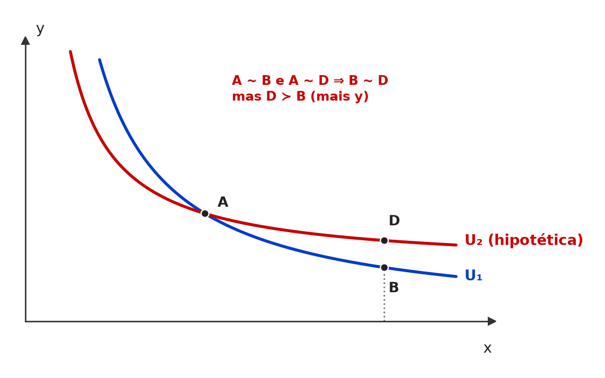 Suponha que U₁ e U₂ se cruzem em A. Então A ~ B (sobre U₁) e A ~ D (sobre U₂); pela transitividade, B ~ D. Mas D tem o mesmo x e mais y que B, logo D ≻ B. Contradição: curvas de níveis distintos não podem se cruzar. 🧐 Dissecando a redação do item: [literalidade] Propriedade clássica com um “impossível” que assusta. O absoluto está correto porque decorre de um axioma, não de evidência empírica. 🔥 Variante frequente: atribuir o não cruzamento à convexidade ou à completude (ERRADO). 😈 Para dificultar:
|
[C/E - Simulado Sapientia › Set/2024 › Preferências e axiomas]Acerca das preferências do consumidor, julgue o item a seguir. [Enunciado reconstruído: na fonte, a frente era só uma imagem, não preservada.] Item: A propriedade da transitividade das preferências estabelece que o consumidor sempre prefere mais a menos. | ❌ ERRADO A propriedade da transitividade das preferências estabelece que o consumidor sempre prefere mais a menos. 🎯 Em poucas palavras: “Preferir mais a menos” é a monotonicidade. A transitividade trata da coerência entre comparações: A ≻ B e B ≻ C ⇒ A ≻ C. 📖 Destrinchando o tema:
🧐 Dissecando a redação do item: [troca de conceito] Atribui à transitividade o conteúdo da monotonicidade. Itens sobre axiomas costumam trocar nome e definição entre os vizinhos da lista; memorize o par nome → frase. 😈 Para dificultar:
✍️ Reescrita correta: A propriedade da monotonicidade das preferências estabelece que o consumidor sempre prefere mais a menos. |
❌ [C/E - Nidi/Jacqueline Bueno › Simulado Novembro/2024 › Preferências e axiomas]Considerando essa informação e a teoria econômica subjacente, julgue certo ou errado (C ou E) o item a seguir. No estudo das preferências dos consumidores, é comum assumir que ‘quanto mais de um bem, melhor’. Esse pressuposto facilita a construção de modelos teóricos na economia, como a análise da teoria do consumidor e a formulação de curvas de demanda. Contudo, esse princípio nem sempre se aplica: há bens cujo consumo excessivo pode levar a uma redução na satisfação, ou até mesmo a uma insatisfação com a aquisição de unidades adicionais. Item: O pressuposto de que “quanto mais de um bem, melhor” é duplamente tratado nos axiomas da plenitude e da monotonicidade das preferências. | ❌ ERRADO O pressuposto de que “quanto mais de um bem, melhor” é duplamente tratado nos axiomas da plenitude e da monotonicidade das preferências. 🎯 Em poucas palavras: “Mais é melhor” é só a monotonicidade (não saciedade, dominância). A plenitude (completude) garante apenas que o consumidor consegue comparar quaisquer cestas — sem dizer qual prefere. 📖 Destrinchando o tema:
🧐 Dissecando a redação do item: [troca de conceito · meia-verdade] O item acerta a monotonicidade e enxerta a plenitude, aproveitando a ambiguidade do nome (“plenitude” lembra “satisfação plena”). O “duplamente” é o sinal de alerta: cada axioma tem uma função própria. 😈 Para dificultar:
✍️ Reescrita correta: O pressuposto de que “quanto mais de um bem, melhor” é tratado apenas no axioma da monotonicidade das preferências; a plenitude garante somente que o consumidor consegue comparar quaisquer cestas. |
[C/E - Simulado Clipping › 07/2023 › Preferências e axiomas]Julgue o item a seguir, relativo aos fundamentos da teoria do consumidor. Item: A teoria do consumidor se baseia na suposição de que os indivíduos são racionais e maximizam sua utilidade, mas essa abordagem tem sido criticada por negligenciar fatores psicológicos e sociais que influenciam as escolhas de consumo. | ✅ CERTO A teoria do consumidor se baseia na suposição de que os indivíduos são racionais e maximizam sua utilidade, mas essa abordagem tem sido criticada por negligenciar fatores psicológicos e sociais que influenciam as escolhas de consumo. 🎯 Em poucas palavras: O núcleo neoclássico é o consumidor racional maximizador; a economia comportamental e abordagens sociológicas o criticam por ignorar vieses, hábitos e influências sociais. 📖 Destrinchando o tema:
🧐 Dissecando a redação do item: [paráfrase fiel] Item de panorama, sem armadilha técnica: descreve a hipótese central e a crítica, sem afirmar que a crítica derrubou o modelo. Ficaria ERRADO com um absoluto (“a teoria ignora completamente…”, “foi abandonada”). 😈 Para dificultar:
|
[C/E - Simulado Clipping › 07/2023 › Preferências e axiomas]Julgue o item a seguir, relativo aos fundamentos da teoria do consumidor. Item: A teoria do consumidor pode ser aplicada não apenas para entender as escolhas individuais de consumo, mas também para analisar o comportamento de mercado e o impacto de políticas públicas sobre o bem-estar dos consumidores. | ✅ CERTO A teoria do consumidor pode ser aplicada não apenas para entender as escolhas individuais de consumo, mas também para analisar o comportamento de mercado e o impacto de políticas públicas sobre o bem-estar dos consumidores. 🎯 Em poucas palavras: Da escolha individual derivam-se a demanda de mercado (soma horizontal) e as medidas de bem-estar (excedente do consumidor, variações compensatória e equivalente) usadas para avaliar políticas. 📖 Destrinchando o tema:
🧐 Dissecando a redação do item: [modulador relativo · paráfrase fiel] Afirmação abrangente, salva pelo “pode”. Itens de “alcance da teoria” são quase sempre CERTOS; viram ERRADOS quando restringem (“aplica-se apenas às escolhas individuais”). 😈 Para dificultar:
|
[C/E - Nabuco › Pré-TPS/2023 › Preferências e axiomas]Com relação à teoria do consumidor, julgue (C ou E) os itens a seguir. Item: Se o consumidor prefere a cesta de consumo A à cesta de consumo B e a cesta B, à cesta C, então, pelo princípio da transitividade, pode-se afirmar que o consumidor prefere a cesta A em relação à cesta C. | ✅ CERTO Se o consumidor prefere a cesta de consumo A à cesta de consumo B e a cesta B, à cesta C, então, pelo princípio da transitividade, pode-se afirmar que o consumidor prefere a cesta A em relação à cesta C. 🎯 Em poucas palavras: Definição literal de transitividade: A ≻ B e B ≻ C ⇒ A ≻ C. Vale também para a preferência fraca (≿) e para a indiferença (~). 📖 Destrinchando o tema:
🧐 Dissecando a redação do item: [literalidade] Item-definição. O risco é desconfiar do “pode-se afirmar” ou confundir com completude; a estrutura “A–B, B–C ⇒ A–C” com três cestas é a marca da transitividade. 😈 Para dificultar:
|
[C/E - Nabuco › Pré-TPS/2023 › Preferências e axiomas]Com relação à teoria do consumidor, julgue (C ou E) os itens a seguir. Item: O consumidor irá preferir a diversificação no caso de preferências convexas. | ✅ CERTO O consumidor irá preferir a diversificação no caso de preferências convexas. 🎯 Em poucas palavras: Preferências convexas: médias ponderadas de cestas indiferentes são pelo menos tão boas quanto os extremos (estritamente convexas: melhores). É a preferência pela diversificação. 📖 Destrinchando o tema:
📈 No gráfico: 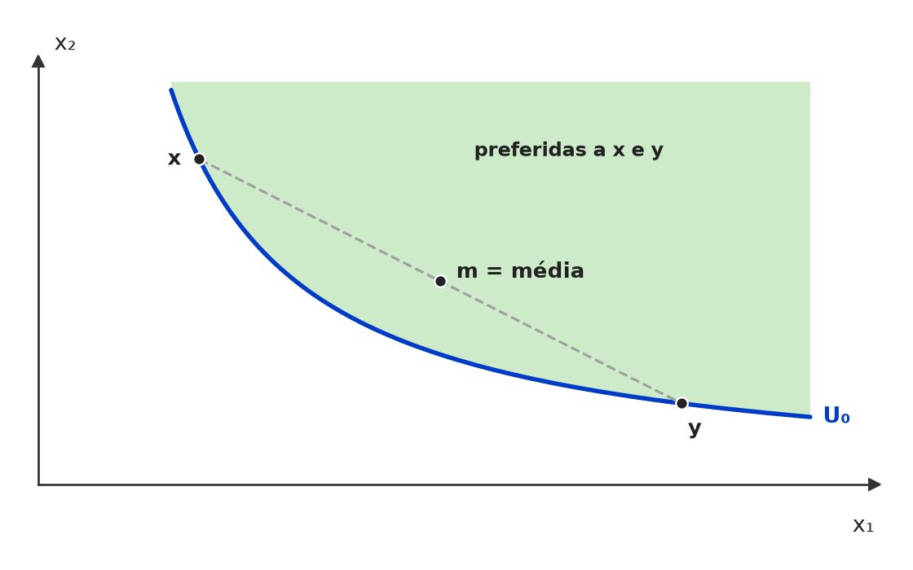 x e y estão na mesma curva de indiferença; a média m fica acima dela, na região sombreada das cestas preferidas. Preferência convexa = o conjunto de cestas “pelo menos tão boas” é convexo: médias valem mais que extremos. 🧐 Dissecando a redação do item: [paráfrase fiel] “Preferir a diversificação” é a tradução verbal de “médias são preferidas a extremos”. Atenção à troca frequente: diversificação ↔ convexidade; especialização ↔ concavidade. 😈 Para dificultar:
|
[C/E - Nabuco › Pré-TPS/2023 › Preferências e axiomas]Com relação à teoria do consumidor, julgue (C ou E) os itens a seguir. Item: Preferências completas são preferências que fazem com que as pessoas desejem mais de todos os bens. | ❌ ERRADO Preferências completas são preferências que fazem com que as pessoas desejem mais de todos os bens. 🎯 Em poucas palavras: “Desejar mais de todos os bens” é monotonicidade. Completude é poder comparar quaisquer duas cestas: x ≿ y, y ≿ x ou ambos. 📖 Destrinchando o tema:
🧐 Dissecando a redação do item: [troca de conceito] Atribui a um axioma de racionalidade o conteúdo de um axioma de “bom comportamento”. Pista: “completas” remete a comparar tudo, não a querer tudo. 😈 Para dificultar:
✍️ Reescrita correta: Preferências completas são preferências que permitem ao consumidor comparar quaisquer duas cestas; desejar mais de todos os bens é a monotonicidade. |
[C/E - Nabuco › Pré-TPS/2023 › Preferências e axiomas]Com relação à teoria do consumidor, julgue (C ou E) os itens a seguir. Item: As preferências são monotônicas porque cestas com maiores quantidades de bens são preferíveis às que possuem menores quantidades. | ✅ CERTO As preferências são monotônicas porque cestas com maiores quantidades de bens são preferíveis às que possuem menores quantidades. 🎯 Em poucas palavras: É a definição de monotonicidade (“quanto mais, melhor”): cestas com mais bens são preferidas às com menos. 📖 Destrinchando o tema:
🧐 Dissecando a redação do item: [literalidade] Definição em forma causal (“são monotônicas porque…”). A redação pode parecer circular, mas é exatamente como os manuais apresentam a hipótese. O risco é procurar pegadinha onde não há. 😈 Para dificultar:
|
[C/E - Prof. Rodrigo Teixeira › Intensivo Pré-TPS/2023 › Preferências e axiomas]A respeito dos conceitos e teorias da microeconomia, julgue os itens a seguir. Item: Segundo o axioma da convexidade, o consumidor sempre prefere uma cesta equilibrada do que uma concentrada em apenas um dos bens, exceto no caso dos bens substitutos perfeitos. | ✅ CERTO Segundo o axioma da convexidade, o consumidor sempre prefere uma cesta equilibrada do que uma concentrada em apenas um dos bens, exceto no caso dos bens substitutos perfeitos. 🎯 Em poucas palavras: A convexidade é o “gosto pela diversidade”: médias de cestas indiferentes valem pelo menos tanto quanto os extremos. Nos substitutos perfeitos a curva de indiferença é reta e a média vale exatamente o mesmo — daí a exceção. 📖 Destrinchando o tema:
🧐 Dissecando a redação do item: [literalidade · exceção] O item reproduz a definição de manual e acrescenta a exceção correta. O “sempre” assusta, mas está amarrado à ressalva final; quem lê “exceto substitutos perfeitos” como erro (achando que deveria ser complementares) marca ERRADO. 😈 Para dificultar:
|
❌ [C/E - Prof. Rodrigo Teixeira › Intensivo Pré-TPS/2023 › Preferências e axiomas]A respeito da teoria do consumidor, julgue as afirmações a seguir. Item: Segundo o axioma da transitividade, o consumidor é capaz de comparar todas as cestas de bens disponíveis no mercado e ordená-las de acordo com suas preferências. | ❌ ERRADO Segundo o axioma da transitividade, o consumidor é capaz de comparar todas as cestas de bens disponíveis no mercado e ordená-las de acordo com suas preferências. 🎯 Em poucas palavras: Comparar quaisquer cestas é a completude. A transitividade é a coerência da ordem: se A ≿ B e B ≿ C, então A ≿ C. 📖 Destrinchando o tema:
🧐 Dissecando a redação do item: [troca de conceito] Descreve a completude e põe o nome da transitividade. A palavra “ordená-las” ajuda o erro a passar, porque ordenar lembra coerência; o núcleo, porém, é “capaz de comparar todas as cestas”. 🔥 Troca de rótulo entre axiomas é campeã em simulados. 😈 Para dificultar:
✍️ Reescrita correta: Segundo o axioma da completude, o consumidor é capaz de comparar todas as cestas de bens disponíveis no mercado e ordená-las de acordo com suas preferências. |
[C/E - Daniel – Economia CACD (Telegram) › Preferências e axiomas]Julgue o item a seguir, relativo à teoria do consumidor. Item: O axioma fraco da preferência revelada é um dos critérios que precisa ser satisfeito para garantir que o consumidor seja consistente com suas preferências. Se uma cesta de bens A for escolhida em detrimento de outra cesta B quando ambos forem acessíveis, o consumidor revela que prefere A em relação a B. | ✅ CERTO O axioma fraco da preferência revelada é um dos critérios que precisa ser satisfeito para garantir que o consumidor seja consistente com suas preferências. Se uma cesta de bens A for escolhida em detrimento de outra cesta B quando ambos forem acessíveis, o consumidor revela que prefere A em relação a B. 🎯 Em poucas palavras: Escolher A quando B também cabia no orçamento = A é revelada preferida a B. O axioma fraco exige coerência: se A é revelada preferida a B, B nunca pode ser revelada preferida a A. 📖 Destrinchando o tema:
🧐 Dissecando a redação do item: [paráfrase fiel · detalhe] A condição “quando ambos forem acessíveis” é o detalhe que sustenta o item: escolher A quando B era inacessível nada revela. A banca inverteria trocando fraco por forte ou removendo a acessibilidade. 😈 Para dificultar:
|
[C/E - Nabuco › Preferências e axiomas]Em relação aos princípios da teoria do consumidor e da teoria da demanda, julgue (C ou E) os itens que se seguem. Item: De acordo com a teoria ordinal do consumidor, as preferências do consumidor serão transitivas quando ele puder decidir se prefere a cesta A à B, se prefere a cesta B à A ou se é indiferente às cestas A e B. | ❌ ERRADO De acordo com a teoria ordinal do consumidor, as preferências do consumidor serão transitivas quando ele puder decidir se prefere a cesta A à B, se prefere a cesta B à A ou se é indiferente às cestas A e B. 🎯 Em poucas palavras: Poder comparar quaisquer duas cestas é a completude. A transitividade envolve três cestas: A ≿ B e B ≿ C ⇒ A ≿ C. 📖 Destrinchando o tema:
🧐 Dissecando a redação do item: [troca de conceito] A definição está correta; o rótulo é o do axioma vizinho. Pista: a definição só menciona duas cestas (A e B) — transitividade sempre precisa de uma terceira. 😈 Para dificultar:
✍️ Reescrita correta: De acordo com a teoria ordinal do consumidor, as preferências do consumidor serão completas quando ele puder decidir se prefere a cesta A à B, se prefere a cesta B à A ou se é indiferente às cestas A e B. |
❌ [C/E - Banca não identificada › Preferências e axiomas]Acerca das preferências do consumidor, julgue o item a seguir. Item: O pressuposto de que “quanto mais de um bem, melhor” é tratado no axioma da monotonicidade das preferências. | ✅ CERTO O pressuposto de que “quanto mais de um bem, melhor” é tratado no axioma da monotonicidade das preferências. 🎯 Em poucas palavras: Monotonicidade (não saciedade): uma cesta com mais de pelo menos um bem, e não menos de nenhum, é preferida. É o “quanto mais, melhor”. 📖 Destrinchando o tema:
🧐 Dissecando a redação do item: [literalidade] Associação direta entre o rótulo e a ideia. As versões erradas costumam trocar o axioma: atribuir o “quanto mais, melhor” à convexidade ou à transitividade. 😈 Para dificultar:
🧠 Mnemônico:
|
❌ [C/E - Banca não identificada › 2018 › Preferências e axiomas]Julgue o item a seguir, relativo à teoria da utilidade e às preferências do consumidor. Item: Um aumento no consumo de um bem pode não aumentar o nível de utilidade de um indivíduo. | ✅ CERTO Um aumento no consumo de um bem pode não aumentar o nível de utilidade de um indivíduo. 🎯 Em poucas palavras: A monotonicidade é uma hipótese, não uma lei: com saciedade, bem neutro ou “mal”, consumir mais pode deixar a utilidade igual ou até reduzi-la. 📖 Destrinchando o tema:
🧐 Dissecando a redação do item: [modulador relativo · contraintuitivo] Quem decorou “mais é melhor” marca ERRADO. O “pode não” só exige um contraexemplo, e há vários. 🔥 Itens com “pode” sobre hipóteses da teoria tendem a ser CERTOS; com “sempre”, ERRADOS. 😈 Para dificultar:
|
[C/E - CEBRASPE › IRBr/CACD/2026 › Utilidade e curvas de indiferença]Considere um consumidor com função utilidade U = x₁x₂, em que x₁ e x₂ representam, respectivamente, as quantidades consumidas dos bens 1 e 2. Considere, ainda, que o preço do bem 1 seja p₁ = 10, o preço do bem 2 seja p₂ = 4, o rendimento do consumidor seja r = 80 e que o consumidor seja racional, prefira mais a menos (monotonicidade) e gaste toda a sua renda em x₁ e x₂. Com base nessas informações, e considerando que TMS seja a taxa marginal de substituição, julgue os itens a seguir. Item: A função em questão é do tipo Cobb-Douglas. | ✅ CERTO A função em questão é do tipo Cobb-Douglas. 🎯 Em poucas palavras: U = x₁x₂ é o caso A = 1, α = β = 1 da Cobb-Douglas U = A·x₁αx₂β. 📖 Destrinchando o tema:
🧐 Dissecando a redação do item: [literalidade] Item de reconhecimento de forma funcional, porta de entrada do bloco 191–193 do TPS 2026. A pegadinha possível seria confundir com substitutos perfeitos (soma) ou complementares perfeitos (mínimo). 😈 Para dificultar:
|
❌ [C/E - CEBRASPE › ANTT/2023 › Utilidade e curvas de indiferença]A partir da situação hipotética precedente, julgue o item seguinte. Em um modelo simplificado para representar o comportamento esperado do consumidor padrão, dois bens, X e Y, são consumidos em x unidades e y unidades, respectivamente. Esses bens são adquiridos no mercado competitivo aos preços px e py, respectivamente, e o consumidor tem uma renda R a ser gastada no consumo desses bens. O comportamento padrão é que o consumidor deseja maximizar a função utilidade u(x, y), que representa sua satisfação obtida pelo consumo dos bens X e Y, limitado ao seu orçamento, dado pela relação px·x + py·y ≤ R. Item: Se X e Y forem bens perfeitamente substitutos e as preferências do consumidor forem estritamente monotônicas, é possível que u(20, 20) > u(19, 30). | ✅ CERTO Se X e Y forem bens perfeitamente substitutos e as preferências do consumidor forem estritamente monotônicas, é possível que u(20, 20) > u(19, 30). 🎯 Em poucas palavras: Substitutos perfeitos: u = ax + by com a, b > 0, em qualquer proporção. u(20, 20) > u(19, 30) ⇔ a > 10b — basta que X valha mais de dez vezes Y. 📖 Destrinchando o tema:
🧐 Dissecando a redação do item: [modulador relativo · contraintuitivo] O “é possível” salva o item: basta um caso (a > 10b). Contraintuitivo porque a cesta com mais unidades no total perde. Compare com o item irmão (ECO-E3-L00148-1), que usa “pode-se garantir” numa cesta que domina a outra. 😈 Para dificultar:
|
[C/E - CEBRASPE › MP/ENAP/Economista/2015 › Utilidade e curvas de indiferença]Com relação à teoria do consumidor, julgue o item a seguir. Item: As curvas de indiferença são côncavas em relação à origem no espaço de bens. | ❌ ERRADO As curvas de indiferença são côncavas em relação à origem no espaço de bens. 🎯 Em poucas palavras: Com preferências bem-comportadas, as curvas de indiferença são convexas em relação à origem: a TMS é decrescente — o consumidor prefere cestas diversificadas a cestas extremas. 📖 Destrinchando o tema:
🧐 Dissecando a redação do item: [troca de conceito] Troca “convexas” por “côncavas” — par de antônimos que a banca adora, porque a curva convexa “parece côncava” para quem olha de cima. Lembre-se: o referencial é a origem; a barriga aponta para ela. 😈 Para dificultar:
✍️ Reescrita correta: As curvas de indiferença são convexas em relação à origem no espaço de bens. |
❌ [C/E - CEBRASPE › MP/ENAP/Economista/2015 › Utilidade e curvas de indiferença]Com relação à teoria do consumidor, julgue o item a seguir. Item: Se o consumidor sempre tomar uma xícara de café adoçado com uma colher de açúcar, então as curvas de indiferença do consumidor apresentarão o formato de linhas retas no espaço de bens. | ❌ ERRADO Se o consumidor sempre tomar uma xícara de café adoçado com uma colher de açúcar, então as curvas de indiferença do consumidor apresentarão o formato de linhas retas no espaço de bens. 🎯 Em poucas palavras: Café e açúcar em proporção fixa (1:1) são complementares perfeitos: U = min(x₁, x₂), e as curvas de indiferença têm formato de L, não de reta. 📖 Destrinchando o tema:
📈 No gráfico: 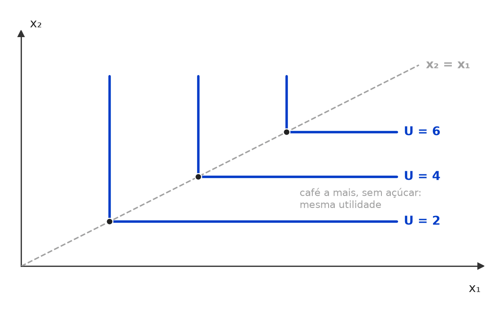 Café (x₁) e açúcar (x₂) sempre na proporção 1:1 são complementares perfeitos, U = min(x₁, x₂): as curvas de indiferença têm formato de L, com o vértice sobre o raio x₂ = x₁. Café ou açúcar a mais, sozinho, não eleva a utilidade. 🧐 Dissecando a redação do item: [troca de conceito] O enunciado descreve corretamente o caso de complementares perfeitos (“sempre … com uma colher”) e cola o formato de substitutos perfeitos. Pista: “sempre” + proporção fixa = L. 🔥 CEBRASPE repete o par reta × L com frequência (ver ECO-E1-0207-1). 😈 Para dificultar:
✍️ Reescrita correta: Se o consumidor sempre tomar uma xícara de café adoçado com uma colher de açúcar, então as curvas de indiferença do consumidor apresentarão o formato de L (ângulo reto) no espaço de bens. |
[C/E - CEBRASPE › TC/RO/ACE – Economia/2013 › Utilidade e curvas de indiferença]Com relação à teoria do consumidor, julgue o item a seguir. Item: Curva de indiferença de dois bens substitutos perfeitos é uma reta. | ✅ CERTO Curva de indiferença de dois bens substitutos perfeitos é uma reta. 🎯 Em poucas palavras: Substitutos perfeitos trocam-se a uma taxa constante (U = a·x₁ + b·x₂): a TMS = a/b não varia e a curva de indiferença é uma reta de inclinação −a/b. 📖 Destrinchando o tema:
🧐 Dissecando a redação do item: [literalidade] Definição de manual, sem armadilha. A banca costuma trocar o par: “complementares perfeitos → reta” (ERRADO) ou “substitutos perfeitos → L” (ERRADO). Ver ECO-E1-0209-1. 😈 Para dificultar:
|
❌ [C/E - CEBRASPE › TJ/AL/Analista Judiciário – Economia/2012 › Utilidade e curvas de indiferença]Com relação à teoria do consumidor, julgue o item a seguir. Item: Se um indivíduo gosta de um bem e é neutro em relação a outro, então a curva de indiferença será uma linha paralela ao eixo do bem neutro. | ✅ CERTO Se um indivíduo gosta de um bem e é neutro em relação a outro, então a curva de indiferença será uma linha paralela ao eixo do bem neutro. 🎯 Em poucas palavras: Com um bem neutro, a utilidade depende só do bem desejado: mudar a quantidade do neutro não altera a utilidade, então a curva corre paralela ao eixo do neutro (perpendicular ao eixo do bem desejado). 📖 Destrinchando o tema:
📈 No gráfico: 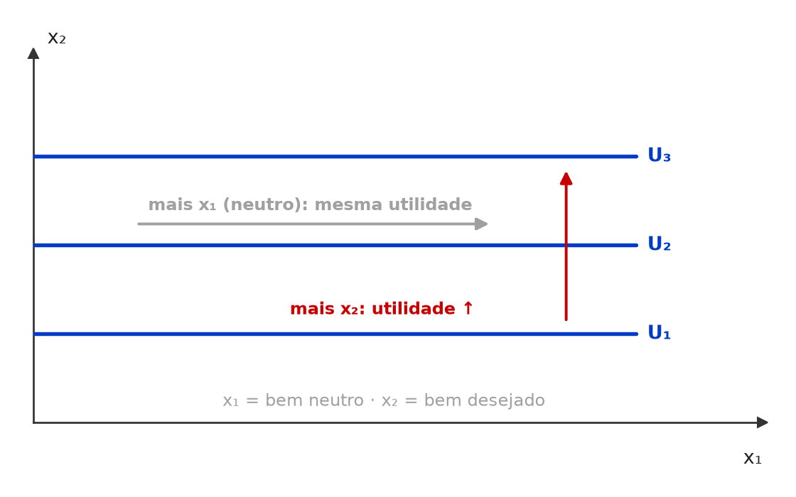 Com x₁ neutro e x₂ desejado, a utilidade depende só de x₂: cada curva de indiferença é uma reta horizontal, paralela ao eixo do bem neutro. Andar para a direita (mais x₁) não muda a utilidade; subir (mais x₂) leva a curvas mais altas. 🧐 Dissecando a redação do item: [detalhe · contraintuitivo] A armadilha é de geometria: “paralela ao eixo do neutro” soa como se o neutro “mandasse” na curva. Faça o teste: mudar o neutro deve manter a utilidade — logo a curva se estende na direção do eixo do neutro. Trocar por “paralela ao eixo do bem desejado” tornaria o item ERRADO. 😈 Para dificultar:
|
[C/E - Clipping › Simuladão Março/2026 › Utilidade e curvas de indiferença]Com base na teoria do consumidor, julgue o item a seguir. Item: Curvas de indiferença mais elevadas no espaço de consumo representam níveis menores de utilidade quando se assume utilidade marginal decrescente, dado que o consumidor valoriza menos unidades adicionais de cada bem. | ❌ ERRADO Curvas de indiferença mais elevadas no espaço de consumo representam níveis menores de utilidade quando se assume utilidade marginal decrescente, dado que o consumidor valoriza menos unidades adicionais de cada bem. 🎯 Em poucas palavras: Pela monotonicidade, curvas mais afastadas da origem = mais utilidade. UMg decrescente só faz a utilidade crescer mais devagar; enquanto UMg > 0, ela cresce. 📖 Destrinchando o tema:
🧐 Dissecando a redação do item: [nexo indevido · inversão] A premissa (UMg decrescente) é verdadeira; a conclusão (curvas mais altas = menos utilidade) não decorre dela e inverte a ordem do mapa. O “dado que” costura o nexo falso. 😈 Para dificultar:
✍️ Reescrita correta: Curvas de indiferença mais elevadas no espaço de consumo representam níveis maiores de utilidade quando se assume utilidade marginal decrescente, embora o consumidor valorize menos unidades adicionais de cada bem. |
[C/E - Nidi/Jacqueline Bueno › Utilidade e curvas de indiferença]Os agentes microeconômicos fazem suas escolhas de forma racional em um cenário de informações completas e simetricamente distribuídas. A respeito da Teoria do Consumidor, julgue certo ou errado (C ou E) os itens a seguir. Item: Com exceção da relação entre bens substitutos, a taxa marginal de substituição entre dois bens é geralmente expressa por uma taxa constante ao longo da curva de indiferença. | ❌ ERRADO Com exceção da relação entre bens substitutos, a taxa marginal de substituição entre dois bens é geralmente expressa por uma taxa constante ao longo da curva de indiferença. 🎯 Em poucas palavras: O item inverte regra e exceção: a TMS em geral varia (é decrescente em módulo) ao longo da curva; ela só é constante justamente no caso dos substitutos perfeitos. 📖 Destrinchando o tema:
🧐 Dissecando a redação do item: [inversão · troca de conceito] O item pega a exceção (TMS constante dos substitutos perfeitos) e a transforma em regra, deixando os substitutos como a exceção. O “geralmente” dá ar de prudência a uma afirmação invertida, e o “substitutos” sem “perfeitos” completa a armadilha. 😈 Para dificultar:
✍️ Reescrita correta: Com exceção da relação entre bens substitutos perfeitos, a taxa marginal de substituição entre dois bens é geralmente expressa por uma taxa decrescente (em módulo) ao longo da curva de indiferença. |
[C/E - Nidi/Jacqueline Bueno › Utilidade e curvas de indiferença]Os agentes microeconômicos fazem suas escolhas de forma racional em um cenário de informações completas e simetricamente distribuídas. A respeito da Teoria do Consumidor, julgue certo ou errado (C ou E) os itens a seguir. Item: Considerando curvas de indiferença que satisfaçam os axiomas de completude, reflexividade e transitividade, bem como a existência de apenas dois bens, é possível que as curvas de indiferença de um consumidor que representem níveis distintos de preferência se cruzem. | ❌ ERRADO Considerando curvas de indiferença que satisfaçam os axiomas de completude, reflexividade e transitividade, bem como a existência de apenas dois bens, é possível que as curvas de indiferença de um consumidor que representem níveis distintos de preferência se cruzem. 🎯 Em poucas palavras: Curvas de indiferença de níveis distintos não se cruzam: o ponto de cruzamento seria indiferente a cestas dos dois níveis e, pela transitividade, os dois níveis seriam um só. 📖 Destrinchando o tema:
📈 No gráfico: 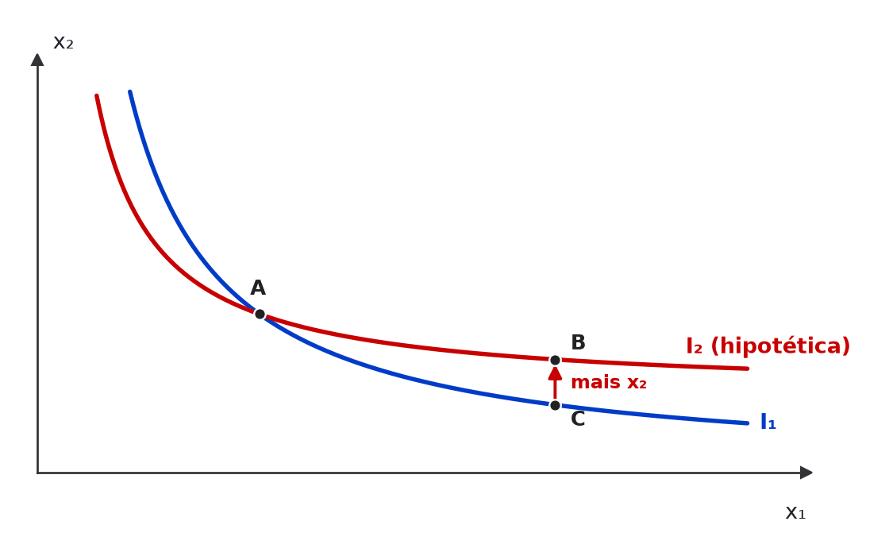 Se I₁ e I₂ se cruzassem em A, teríamos A ~ C (ambas em I₁) e A ~ B (ambas em I₂); pela transitividade, B ~ C. Mas B tem o mesmo x₁ e mais x₂ que C, logo B ≻ C: contradição. Curvas de níveis distintos não se cruzam. 🧐 Dissecando a redação do item: [contradição] O item enumera corretamente os axiomas e conclui o oposto do que eles implicam. O “é possível” soa como modulador relativo prudente, mas aqui é o erro: o cruzamento é logicamente impossível sob transitividade. 😈 Para dificultar:
✍️ Reescrita correta: Considerando curvas de indiferença que satisfaçam os axiomas de completude, reflexividade e transitividade, bem como a existência de apenas dois bens, não é possível que as curvas de indiferença de um consumidor que representem níveis distintos de preferência se cruzem. |
[C/E - Nidi/Jacqueline Bueno › Utilidade e curvas de indiferença]Os agentes microeconômicos fazem suas escolhas de forma racional em um cenário de informações completas e simetricamente distribuídas. A respeito da Teoria do Consumidor, julgue certo ou errado (C ou E) os itens a seguir. Item: O bem-estar provocado pelo consumo adicional de cada unidade de um bem reflete a lei da utilidade marginal decrescente. | ✅ CERTO O bem-estar provocado pelo consumo adicional de cada unidade de um bem reflete a lei da utilidade marginal decrescente. 🎯 Em poucas palavras: O acréscimo de satisfação de cada unidade extra é a utilidade marginal; a lei diz que esse acréscimo tende a cair à medida que o consumo do bem aumenta. 📖 Destrinchando o tema:
🧐 Dissecando a redação do item: [literalidade] Paráfrase direta da definição: “bem-estar do consumo adicional de cada unidade” = utilidade marginal. A tentação de marcar ERRADO vem da redação vaga (“reflete”), que não diz se o bem-estar sobe ou cai — mas a lei é justamente a descrição desse acréscimo. 😈 Para dificultar:
|
[C/E - IDEG – Prof. Bozan › Pré-TPS/2026 › Utilidade e curvas de indiferença]A análise das restrições orçamentárias e das escolhas do consumidor considera vários elementos centrais na microeconomia, incluindo preferências, renda, preços, e as curvas de indiferença. Com base nessa análise, julgue os itens a seguir. Item: A curva de indiferença é convexa à origem, pois reflete o desejo do consumidor de diversificar seu consumo. No entanto, não é possível que uma curva de indiferença seja côncava, pois isso contrariaria o princípio de monotonicidade de preferências mais a mais. | ❌ ERRADO A curva de indiferença é convexa à origem, pois reflete o desejo do consumidor de diversificar seu consumo. No entanto, não é possível que uma curva de indiferença seja côncava, pois isso contrariaria o princípio de monotonicidade de preferências mais a mais. 🎯 Em poucas palavras: Curvas côncavas são possíveis: violam a convexidade (o consumidor prefere especializar-se), não a monotonicidade, que só exige inclinação negativa. 📖 Destrinchando o tema:
🧐 Dissecando a redação do item: [troca de conceito · modulador absoluto] A 1ª frase, verdadeira, dá credibilidade; a 2ª traz um “não é possível” e uma justificativa com o axioma trocado (monotonicidade no lugar de convexidade). Pista: monotonicidade fala de inclinação; convexidade, de curvatura. 😈 Para dificultar:
✍️ Reescrita correta: A curva de indiferença é convexa à origem, pois reflete o desejo do consumidor de diversificar seu consumo. No entanto, é possível que uma curva de indiferença seja côncava — preferências não convexas, que favorecem a especialização —, sem contrariar o princípio de monotonicidade de preferências mais a mais. |
❌ [C/E - Armstrong › Pré-TPS/2026 › Utilidade e curvas de indiferença]Acerca do formato das curvas de indiferença, julgue o item a seguir. Item: Quanto maior a facilidade de substituição entre dois bens, mais forte (isto é, maior) a convexidade das curvas de indiferença; já quando a substituição é difícil, as curvas tendem a ser menos convexas. | ❌ ERRADO Quanto maior a facilidade de substituição entre dois bens, mais forte (isto é, maior) a convexidade das curvas de indiferença; já quando a substituição é difícil, as curvas tendem a ser menos convexas. 🎯 Em poucas palavras: Relação invertida: substituição fácil → curva quase reta (pouca convexidade); substituição difícil → curva muito arqueada, no limite um L (convexidade máxima). 📖 Destrinchando o tema:
📈 No gráfico: 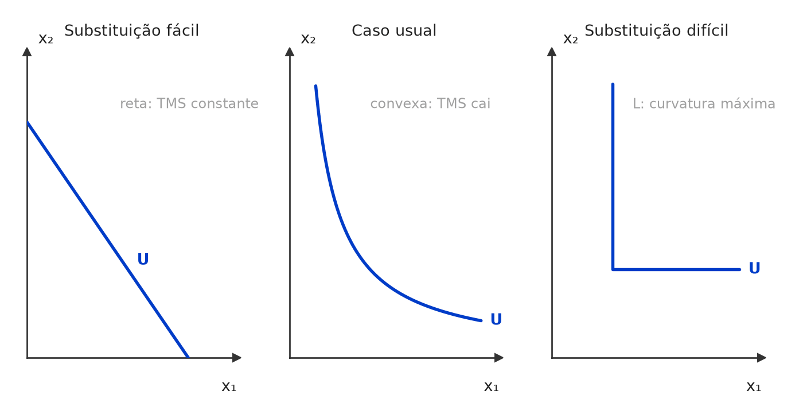 Da esquerda para a direita, a substituição fica mais difícil e a curvatura aumenta: reta (substitutos perfeitos, convexidade nula, TMS constante), curva usual (TMS decrescente) e L (complementares perfeitos, curvatura máxima). 🧐 Dissecando a redação do item: [inversão] Troca simétrica dos dois polos: tudo o que é dito de um extremo vale para o outro. O “isto é, maior” reforça a inversão para parecer definição. Teste rápido: imagine os substitutos perfeitos — reta — e veja se “mais convexa” faz sentido. 😈 Para dificultar:
🧠 Mnemônico:
✍️ Reescrita correta: Quanto maior a facilidade de substituição entre dois bens, mais fraca (isto é, menor) a convexidade das curvas de indiferença; já quando a substituição é difícil, as curvas tendem a ser mais convexas. |
[C/E - Nabuco › Utilidade e curvas de indiferença]Em relação à microeconomia, julgue (C ou E) os seguintes itens. Item: As curvas de indiferença ilustram as diferentes combinações de bens que um consumidor pode adquirir, dada sua renda e os preços dos bens. | ❌ ERRADO As curvas de indiferença ilustram as diferentes combinações de bens que um consumidor pode adquirir, dada sua renda e os preços dos bens. 🎯 Em poucas palavras: O item define a restrição orçamentária (o que o consumidor pode comprar). A curva de indiferença reúne as cestas de mesma utilidade (o que ele quer). 📖 Destrinchando o tema:
🧐 Dissecando a redação do item: [troca de conceito] Clássica troca de definições entre os dois instrumentos do modelo. Pista: qualquer menção a renda ou preços na definição denuncia a restrição orçamentária, nunca a curva de indiferença. 😈 Para dificultar:
✍️ Reescrita correta: As curvas de indiferença ilustram as diferentes combinações de bens que proporcionam ao consumidor o mesmo nível de satisfação; as que ele pode adquirir, dada sua renda e os preços dos bens, formam a restrição orçamentária. |
[C/E - Nabuco › Utilidade e curvas de indiferença]A respeito da teoria do consumidor e dos conceitos de elasticidade, julgue (C ou E) os seguintes itens. Item: A convexidade das curvas de indiferença reflete a hipótese de taxa marginal de substituição decrescente, indicando que os consumidores preferem cestas de consumo balanceadas a cestas extremas. | ✅ CERTO A convexidade das curvas de indiferença reflete a hipótese de taxa marginal de substituição decrescente, indicando que os consumidores preferem cestas de consumo balanceadas a cestas extremas. 🎯 Em poucas palavras: Curva convexa = TMS decrescente = “médias são preferidas a extremos”: três leituras (geométrica, marginal e de preferência) da mesma hipótese. 📖 Destrinchando o tema:
🧐 Dissecando a redação do item: [paráfrase fiel] Junta as duas leituras clássicas da convexidade (TMS decrescente e preferência por diversificação). A armadilha seria estranhar o verbo “reflete” ou achar que “balanceadas” contradiz algo; não contradiz. 😈 Para dificultar:
|
[C/E - Nidi/Jacqueline Bueno › Simulado Julho/2025 › Utilidade e curvas de indiferença]Os agentes microeconômicos fazem suas escolhas de forma racional em um cenário de informações completas e simetricamente distribuídas. A respeito da Teoria do Consumidor, julgue certo ou errado (C ou E) os itens a seguir. Item: Com exceção da relação entre bens substitutos, a taxa marginal de substituição entre dois bens é geralmente expressa por uma taxa constante ao longo da curva de indiferença. | ❌ ERRADO Com exceção da relação entre bens substitutos, a taxa marginal de substituição entre dois bens é geralmente expressa por uma taxa constante ao longo da curva de indiferença. 🎯 Em poucas palavras: O item inverte regra e exceção: em geral a TMS é decrescente (curvas convexas); ela só é constante no caso de substitutos perfeitos (curvas retas). 📖 Destrinchando o tema:
🧐 Dissecando a redação do item: [inversão · meia-verdade] A frase pega a exceção (TMS constante) e a apresenta como regra, ressalvando justamente o caso em que ela vale. O “bens substitutos” sem “perfeitos” é outro descuido proposital. O mesmo item caiu no Simulado Março/2025 (ECO-E3-L00236-1). 😈 Para dificultar:
✍️ Reescrita correta: Com exceção da relação entre bens substitutos perfeitos, a taxa marginal de substituição entre dois bens é geralmente expressa por uma taxa decrescente ao longo da curva de indiferença. |
[C/E - Nidi/Jacqueline Bueno › Simulado Março/2025 › Utilidade e curvas de indiferença]Os agentes microeconômicos fazem suas escolhas de forma racional em um cenário de informações completas e simetricamente distribuídas. A respeito da Teoria do Consumidor, julgue certo ou errado (C ou E) os itens a seguir. Item: Com exceção da relação entre bens substitutos, a taxa marginal de substituição entre dois bens é geralmente expressa por uma taxa constante ao longo da curva de indiferença. | ❌ ERRADO Com exceção da relação entre bens substitutos, a taxa marginal de substituição entre dois bens é geralmente expressa por uma taxa constante ao longo da curva de indiferença. 🎯 Em poucas palavras: Regra e exceção estão trocadas: a TMS é, em geral, decrescente ao longo da curva; constante só para substitutos perfeitos. 📖 Destrinchando o tema:
🧐 Dissecando a redação do item: [inversão · meia-verdade] O examinador mantém o vocabulário certo (TMS, curva de indiferença, substitutos) e só inverte o papel de regra e exceção. Item idêntico ao do Simulado Julho/2025 (ECO-E3-L00078-1): a banca recicla a pegadinha. 😈 Para dificultar:
✍️ Reescrita correta: Com exceção da relação entre bens substitutos perfeitos, a taxa marginal de substituição entre dois bens é geralmente expressa por uma taxa decrescente ao longo da curva de indiferença. |
[C/E - Nidi/Jacqueline Bueno › Fevereiro/2025 › Utilidade e curvas de indiferença]Segundo a teoria microeconômica e os seus axiomas da racionalidade, julgue o item a seguir. Item: O axioma da convexidade expressa uma preferência por diversidade de bens na cesta de consumo e esta convexidade pode ser compreendida pela taxa marginal de substituição (TMS) decrescente. Existe, no entanto, um caso em que essa TMS é constante, quando os bens são complementares perfeitos. Nesse caso, a curva de indiferença perde sua convexidade e se torna linear. | ❌ ERRADO O axioma da convexidade expressa uma preferência por diversidade de bens na cesta de consumo e esta convexidade pode ser compreendida pela taxa marginal de substituição (TMS) decrescente. Existe, no entanto, um caso em que essa TMS é constante, quando os bens são complementares perfeitos. Nesse caso, a curva de indiferença perde sua convexidade e se torna linear. 🎯 Em poucas palavras: TMS constante e curva linear são de substitutos perfeitos. Complementares perfeitos têm curva em L, com TMS infinita no braço vertical, zero no horizontal e indefinida no vértice. 📖 Destrinchando o tema:
🧐 Dissecando a redação do item: [troca de conceito] Tudo está certo, menos uma palavra: “complementares” no lugar de “substitutos”. Como substitutos e complementares perfeitos aparecem sempre juntos nos manuais (mesma figura, painéis a e b), a troca é a pegadinha natural. 😈 Para dificultar:
✍️ Reescrita correta: O axioma da convexidade expressa uma preferência por diversidade de bens na cesta de consumo e esta convexidade pode ser compreendida pela taxa marginal de substituição (TMS) decrescente. Existe, no entanto, um caso em que essa TMS é constante, quando os bens são substitutos perfeitos. Nesse caso, a curva de indiferença perde sua convexidade e se torna linear. |
[C/E - Nidi/Jacqueline Bueno › Simulado Novembro/2024 › Utilidade e curvas de indiferença]Considerando essa informação e a teoria econômica subjacente, julgue certo ou errado (C ou E) o item a seguir. No estudo das preferências dos consumidores, é comum assumir que ‘quanto mais de um bem, melhor’. Esse pressuposto facilita a construção de modelos teóricos na economia, como a análise da teoria do consumidor e a formulação de curvas de demanda. Contudo, esse princípio nem sempre se aplica: há bens cujo consumo excessivo pode levar a uma redução na satisfação, ou até mesmo a uma insatisfação com a aquisição de unidades adicionais. Item: A satisfação adicional a cada nova unidade consumida é reflexo da lei da utilidade marginal decrescente e da renda excedente após a aquisição da cesta ótima do consumidor. | ❌ ERRADO A satisfação adicional a cada nova unidade consumida é reflexo da lei da utilidade marginal decrescente e da renda excedente após a aquisição da cesta ótima do consumidor. 🎯 Em poucas palavras: A utilidade marginal é propriedade das preferências, não do bolso. E não há renda excedente no ótimo: com monotonicidade, a cesta ótima esgota a renda. 📖 Destrinchando o tema:
🧐 Dissecando a redação do item: [nexo indevido · meia-verdade] A 1ª metade é verdadeira; o “e da renda excedente…” cria uma causa inexistente e ainda pressupõe sobra de renda no ótimo. Basta apagar o trecho final para o item ficar certo. 😈 Para dificultar:
✍️ Reescrita correta: A satisfação adicional a cada nova unidade consumida é reflexo da lei da utilidade marginal decrescente, independentemente da renda; na cesta ótima, toda a renda é gasta. |
[C/E - Nidi/Jacqueline Bueno › Simulado Novembro/2024 › Utilidade e curvas de indiferença]Considerando essa informação e a teoria econômica subjacente, julgue certo ou errado (C ou E) o item a seguir. No estudo das preferências dos consumidores, é comum assumir que ‘quanto mais de um bem, melhor’. Esse pressuposto facilita a construção de modelos teóricos na economia, como a análise da teoria do consumidor e a formulação de curvas de demanda. Contudo, esse princípio nem sempre se aplica: há bens cujo consumo excessivo pode levar a uma redução na satisfação, ou até mesmo a uma insatisfação com a aquisição de unidades adicionais. Item: A quantidade máxima que pode ser adquirida de um bem sem reduzir a utilidade total do consumidor, quando existe, marca um ponto de saciedade. | ✅ CERTO A quantidade máxima que pode ser adquirida de um bem sem reduzir a utilidade total do consumidor, quando existe, marca um ponto de saciedade. 🎯 Em poucas palavras: O ponto de saciedade é a quantidade em que a utilidade total atinge o máximo (UMg = 0): uma unidade a mais já reduziria a satisfação (UMg < 0). 📖 Destrinchando o tema:
🧐 Dissecando a redação do item: [paráfrase fiel · modulador relativo] Define o ponto de saciedade sem usar a palavra “máximo da UT”. O “quando existe” protege o item da objeção de que, com monotonicidade, não há saciedade. É o 3º item de um bloco sobre o tema (ver ECO-E3-L00374-1). 😈 Para dificultar:
|
❌ [C/E - Simulado Clipping › 07/2023 › Utilidade e curvas de indiferença]Julgue o item a seguir, relativo à teoria da utilidade e às preferências do consumidor. Item: A utilidade marginal constante é um conceito fundamental na teoria do consumidor, que indica que a satisfação adicional obtida com o consumo de uma unidade adicional de um bem ou serviço. | ❌ ERRADO A utilidade marginal constante é um conceito fundamental na teoria do consumidor, que indica que a satisfação adicional obtida com o consumo de uma unidade adicional de um bem ou serviço [...]. 🎯 Em poucas palavras: O pilar da teoria do consumidor é a utilidade marginal decrescente: cada unidade adicional acrescenta menos satisfação que a anterior. 📖 Destrinchando o tema:
🧐 Dissecando a redação do item: [troca de conceito] Troca “decrescente” por “constante” numa frase de definição; o restante é paráfrase de manual. A frase vem truncada na fonte (falta o verbo depois de “satisfação adicional obtida…”), mas o julgamento decorre da troca do adjetivo. 😈 Para dificultar:
✍️ Reescrita correta: A utilidade marginal decrescente é um conceito fundamental na teoria do consumidor, que indica que a satisfação adicional obtida com o consumo de uma unidade adicional de um bem ou serviço diminui à medida que o consumo aumenta. |
[C/E - Nabuco › Pré-TPS/2023 › Utilidade e curvas de indiferença]Em relação à microeconomia, julgue (C ou E) os seguintes itens. Item: Considerando preferências racionais e bem comportadas, uma das propriedades das curvas de indiferença é que a taxa marginal de substituição é decrescente ao longo da curva de indiferença. | ✅ CERTO Considerando preferências racionais e bem comportadas, uma das propriedades das curvas de indiferença é que a taxa marginal de substituição é decrescente ao longo da curva de indiferença. 🎯 Em poucas palavras: Preferências bem comportadas = monotônicas + convexas → curvas negativamente inclinadas e convexas, com |TMS| decrescente da esquerda para a direita. 📖 Destrinchando o tema:
📈 No gráfico: 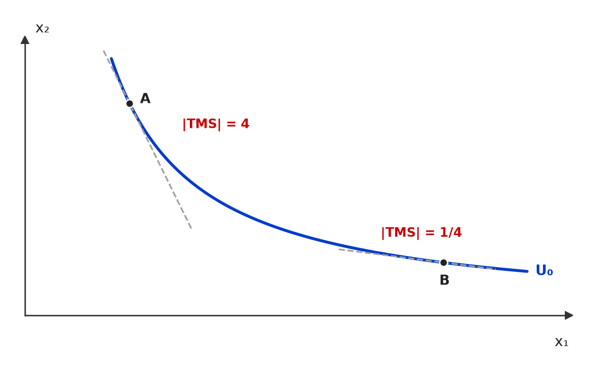 Ao longo da curva de indiferença bem comportada, a inclinação cai em módulo: em A (pouco x₁, muito x₂) a |TMS| é 4; em B (muito x₁, pouco x₂), só 1/4. É a TMS decrescente que dá a forma convexa. 🧐 Dissecando a redação do item: [literalidade] Reproduz a propriedade de manual. A dúvida possível — “decrescente” ou “crescente”? — se resolve lembrando que o sinal é negativo e o que cai é o módulo. 😈 Para dificultar:
|
[C/E - Nabuco › Pré-TPS/2023 › Utilidade e curvas de indiferença]No que se refere à teoria do consumidor e às falhas de mercado, julgue (C ou E) os seguintes itens. Item: Uma das propriedades das curvas de indiferença é que as curvas em formato de “L” representam bens substitutos perfeitos. | ❌ ERRADO Uma das propriedades das curvas de indiferença é que as curvas em formato de “L” representam bens substitutos perfeitos. 🎯 Em poucas palavras: Curva em L = complementares perfeitos (proporção fixa). Substitutos perfeitos têm curvas retas, com TMS constante. 📖 Destrinchando o tema:
📈 No gráfico: 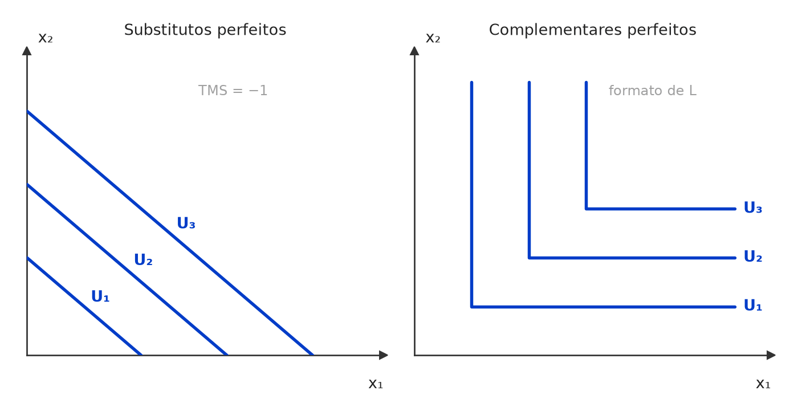 Retas paralelas = substitutos perfeitos (troca a taxa constante, TMS = −1); curvas em L = complementares perfeitos (proporção fixa, como sapato esquerdo e direito). O formato em L pertence aos complementares. 🧐 Dissecando a redação do item: [troca de conceito] Troca direta dos dois casos-limite. 🔥 Muito frequente: a banca alterna “reta”, “L”, “substitutos” e “complementares” em itens irmãos. 😈 Para dificultar:
✍️ Reescrita correta: Uma das propriedades das curvas de indiferença é que as curvas em formato de “L” representam bens complementares perfeitos. |
❌ [C/E - Prof. Rodrigo Teixeira › Intensivo Pré-TPS/2023 › Utilidade e curvas de indiferença]Sobre a teoria do consumidor, avalie os itens a seguir. Item: As preferências dos consumidores são representadas por curvas de indiferença, em que cada uma contém as possíveis combinações de bens e serviços que trazem a mesma satisfação. Graficamente, as curvas de indiferença são positivamente inclinadas, o que significa dizer que as combinações representadas mais à direita proporcionam mais satisfação aos consumidores. | ❌ ERRADO As preferências dos consumidores são representadas por curvas de indiferença, em que cada uma contém as possíveis combinações de bens e serviços que trazem a mesma satisfação. Graficamente, as curvas de indiferença são positivamente inclinadas, o que significa dizer que as combinações representadas mais à direita proporcionam mais satisfação aos consumidores. 🎯 Em poucas palavras: Com dois “bens” (mais é melhor), a curva de indiferença é negativamente inclinada: para manter a satisfação, ganhar x exige perder y. Que curvas mais afastadas valem mais é verdade, mas não decorre da inclinação. 📖 Destrinchando o tema:
🧐 Dissecando a redação do item: [meia-verdade · nexo indevido] A 1ª frase é a definição correta; o erro foi enxertado na geometria (“positivamente”) e amarrado, com “o que significa dizer que”, a uma conclusão que soa certa. Pista: se a curva liga cestas de mesma satisfação, não pode ao mesmo tempo indicar que pontos à direita satisfazem mais. 😈 Para dificultar:
✍️ Reescrita correta: As preferências dos consumidores são representadas por curvas de indiferença, em que cada uma contém as possíveis combinações de bens e serviços que trazem a mesma satisfação. Graficamente, as curvas de indiferença são negativamente inclinadas, e as curvas mais afastadas da origem proporcionam mais satisfação aos consumidores. |
❌ [C/E - Prof. Rodrigo Teixeira › Intensivo Pré-TPS/2023 › Utilidade e curvas de indiferença]Sobre a teoria do consumidor, avalie os itens a seguir. Item: Se um consumidor gosta de refrigerante, mas não faz nenhuma distinção entre as diferentes marcas disponíveis no mercado, então, para esse consumidor, o mapa de indiferença entre duas marcas quaisquer é formado por linhas retas paralelas. | ✅ CERTO Se um consumidor gosta de refrigerante, mas não faz nenhuma distinção entre as diferentes marcas disponíveis no mercado, então, para esse consumidor, o mapa de indiferença entre duas marcas quaisquer é formado por linhas retas paralelas. 🎯 Em poucas palavras: Marcas indistinguíveis são substitutos perfeitos: u = x + y. Cada curva de indiferença é x + y = k — retas de inclinação −1, paralelas entre si. 📖 Destrinchando o tema:
🧐 Dissecando a redação do item: [paráfrase fiel] O item descreve substitutos perfeitos sem dizer o nome, por meio de um exemplo cotidiano. A pegadinha está em “paralelas”: quem pensa que cada curva poderia ter inclinação diferente hesita. Com TMS constante, paralelismo é automático. 😈 Para dificultar:
|
[C/E - Prof. Rodrigo Teixeira › Intensivo Pré-TPS/2023 › Utilidade e curvas de indiferença]A respeito da teoria do consumidor, julgue as afirmações a seguir. Item: Bens que apresentam nível de quantidade consumida a partir da qual a utilidade marginal se torna negativa são chamados de bens de consumo saciado. | ✅ CERTO Bens que apresentam nível de quantidade consumida a partir da qual a utilidade marginal se torna negativa são chamados de bens de consumo saciado. 🎯 Em poucas palavras: Há saciedade quando a utilidade total atinge um máximo: ali a UMg é zero e, dali em diante, cada unidade extra reduz a satisfação (UMg < 0). 📖 Destrinchando o tema:
📈 No gráfico: 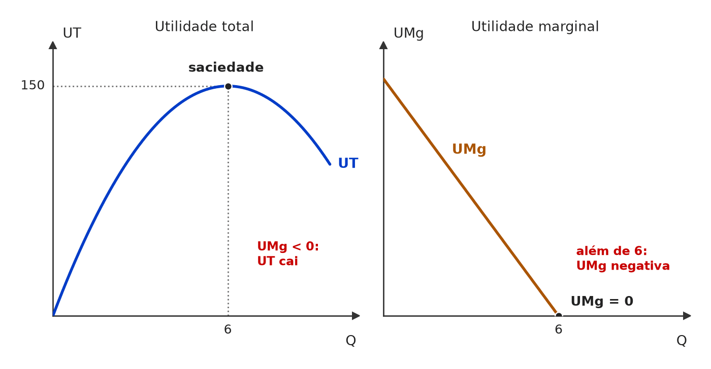 A utilidade total sobe enquanto a UMg é positiva, atinge o máximo (150) no ponto de saciedade, onde UMg = 0 (Q = 6), e cai daí em diante: além de 6, cada unidade tem utilidade marginal negativa. 🧐 Dissecando a redação do item: [literalidade] Definição de manual com nome pouco usual (“bens de consumo saciado”), o que gera insegurança. O núcleo — “UMg se torna negativa a partir de certa quantidade” — é exatamente o que caracteriza o ponto de saciedade. 😈 Para dificultar:
|
[C/E - Prof. Rodrigo Teixeira › Intensivo Pré-TPS/2023 › Utilidade e curvas de indiferença]Acerca dos conceitos e teorias da microeconomia, julgue os itens a seguir. Item: Se dois bens A e B são complementares perfeitos, o aumento do preço de A com o preço de B constante, fará o consumidor reduzir seu consumo mais rapidamente o consumo de A que o de B. | ❌ ERRADO Se dois bens A e B são complementares perfeitos, o aumento do preço de A com o preço de B constante, fará o consumidor reduzir seu consumo mais rapidamente o consumo de A que o de B. 🎯 Em poucas palavras: Em complementares perfeitos a proporção é fixa: o consumidor reduz A e B na mesma proporção. Cortar mais A que B deixaria unidades de B “sem par”, que não geram utilidade. 📖 Destrinchando o tema:
🧐 Dissecando a redação do item: [troca de conceito] O item aplica a complementares perfeitos uma intuição de complementares comuns (o bem que encareceu cai mais). O “perfeitos” é a palavra-gatilho: proporção fixa não admite ritmos diferentes de redução. 😈 Para dificultar:
✍️ Reescrita correta: Se dois bens A e B são complementares perfeitos, o aumento do preço de A com o preço de B constante fará o consumidor reduzir o consumo de A e o de B na mesma proporção. |
[C/E - Daniel – Economia CACD (Telegram) › Utilidade e curvas de indiferença]Julgue o item a seguir, relativo à teoria do consumidor. Item: De acordo com a teoria da utilidade ordinal não se podem colocar ponderações nas diferenças absolutas quanto à utilidade de um conjunto de bens associado com outro conjunto, mas apenas é possível fazer comparações relativas. | ✅ CERTO De acordo com a teoria da utilidade ordinal não se podem colocar ponderações nas diferenças absolutas quanto à utilidade de um conjunto de bens associado com outro conjunto, mas apenas é possível fazer comparações relativas. 🎯 Em poucas palavras: Na utilidade ordinal os números só ordenam cestas (A melhor que B); a distância entre eles não tem significado — isso seria utilidade cardinal. 📖 Destrinchando o tema:
🧐 Dissecando a redação do item: [paráfrase fiel] Redação truncada (“ponderações nas diferenças absolutas”), mas fiel à definição. O “apenas” não torna o item absoluto indevido — ordenar é, de fato, tudo o que a ordinal permite. Item espelho: ECO-E1-0202-1 (“medida objetiva”). 😈 Para dificultar:
|
[C/E - Daniel – Economia CACD (Telegram) › Utilidade e curvas de indiferença]Julgue o item a seguir, relativo à teoria do consumidor. Item: A preferência do consumidor é representada pela utilidade: De acordo com a teoria do consumidor, as preferências dos consumidores são expressas em termos de utilidade. A utilidade é uma medida objetiva de satisfação ou benefício que os consumidores atribuem aos diferentes bens e serviços que consomem. | ❌ ERRADO A preferência do consumidor é representada pela utilidade: De acordo com a teoria do consumidor, as preferências dos consumidores são expressas em termos de utilidade. A utilidade é uma medida objetiva de satisfação ou benefício que os consumidores atribuem aos diferentes bens e serviços que consomem. 🎯 Em poucas palavras: A utilidade é subjetiva (cada um atribui a sua) e, na teoria moderna, ordinal: só ordena cestas, não mede satisfação de forma objetiva. 📖 Destrinchando o tema:
🧐 Dissecando a redação do item: [meia-verdade · troca de conceito] Duas frases corretas de abertura e o erro enxertado no adjetivo final (“objetiva”). Pista: “que os consumidores atribuem” já denuncia a subjetividade. Item espelho: ECO-E1-0201-1. 😈 Para dificultar:
✍️ Reescrita correta: [...] A utilidade é uma medida subjetiva de satisfação ou benefício que os consumidores atribuem aos diferentes bens e serviços que consomem. |
[C/E - Daniel – Economia CACD (Telegram) › Utilidade e curvas de indiferença]Julgue o item a seguir, relativo à teoria do consumidor. Item: A Taxa Marginal de Substituição indica a taxa a que um consumidor está disposto a trocar um determinado bem por outro de forma a manter o mesmo nível de utilidade. Num mapa de curvas de indiferença, e para cada combinação de bens x e y, a Taxa Marginal de Substituição é dada pela inclinação da curva de indiferença. | ✅ CERTO A Taxa Marginal de Substituição indica a taxa a que um consumidor está disposto a trocar um determinado bem por outro de forma a manter o mesmo nível de utilidade. Num mapa de curvas de indiferença, e para cada combinação de bens x e y, a Taxa Marginal de Substituição é dada pela inclinação da curva de indiferença. 🎯 Em poucas palavras: A TMS é a taxa de troca que mantém a utilidade — geometricamente, a inclinação (em módulo) da curva de indiferença naquele ponto: TMS = −dy/dx = UMgₓ/UMgᵧ. 📖 Destrinchando o tema:
🧐 Dissecando a redação do item: [literalidade] Definição de manual em duas frases. A banca costuma errar a TMS trocando a referência (“mantendo a renda constante” em vez da utilidade) ou a curva (“inclinação da reta orçamentária” como definição). 😈 Para dificultar:
|
[C/E - Nabuco › Utilidade e curvas de indiferença]Em relação à teoria microeconômica, julgue (C ou E) os seguintes itens. Item: A utilidade marginal diminui à medida que mais unidades são produzidas, segundo a lei da utilidade marginal decrescente. | ❌ ERRADO A utilidade marginal diminui à medida que mais unidades são produzidas, segundo a lei da utilidade marginal decrescente. 🎯 Em poucas palavras: Utilidade é conceito do consumo: a UMg cai à medida que mais unidades são consumidas. O equivalente na produção é o produto marginal decrescente. 📖 Destrinchando o tema:
🧐 Dissecando a redação do item: [troca de conceito] Uma palavra trocada leva o conceito do consumo para a produção. Itens de uma palavra só exigem leitura lenta: “produzidas” ao lado de “utilidade” é o sinal. 😈 Para dificultar:
✍️ Reescrita correta: A utilidade marginal diminui à medida que mais unidades são consumidas, segundo a lei da utilidade marginal decrescente. |
[C/E - Nabuco › Utilidade e curvas de indiferença]Em relação aos princípios da teoria do consumidor e da teoria da demanda, julgue (C ou E) os itens que se seguem. Item: A inclinação das curvas de indiferença é representada pela razão entre os preços dos bens considerados. | ❌ ERRADO A inclinação das curvas de indiferença é representada pela razão entre os preços dos bens considerados. 🎯 Em poucas palavras: Inclinação da curva de indiferença = TMS = UMg₁/UMg₂ (preferências). Razão de preços = inclinação da restrição orçamentária (mercado). Elas só coincidem no ótimo. 📖 Destrinchando o tema:
🧐 Dissecando a redação do item: [troca de conceito] Mistura a condição de equilíbrio (TMS = p₁/p₂) com a definição da inclinação. Quem decorou “TMS = razão de preços” sem o contexto do ótimo cai. Pista: o item não fala em ótimo nem em equilíbrio. 😈 Para dificultar:
✍️ Reescrita correta: A inclinação das curvas de indiferença é representada pela taxa marginal de substituição (razão entre as utilidades marginais dos bens), que só se iguala à razão entre os preços no ponto ótimo. |
[C/E - Nabuco › Utilidade e curvas de indiferença]Em relação aos princípios da teoria do consumidor e da teoria da demanda, julgue (C ou E) os itens que se seguem. Item: Dois bens são considerados complementos perfeitos quando a curva de indiferença apresenta taxa marginal de substituição crescente. | ❌ ERRADO Dois bens são considerados complementos perfeitos quando a curva de indiferença apresenta taxa marginal de substituição crescente. 🎯 Em poucas palavras: Complementos perfeitos são consumidos em proporção fixa: curva em L, com TMS infinita no trecho vertical, nula no horizontal e indefinida no vértice. TMS crescente é sinal de preferências côncavas. 📖 Destrinchando o tema:
📈 No gráfico: 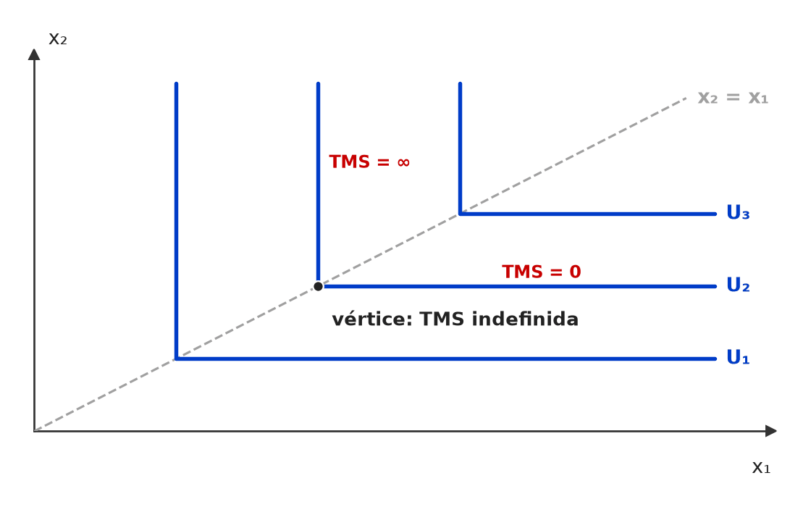 Complementos perfeitos (proporção fixa 1:1): curvas em L com vértices sobre o raio x₂ = x₁. A TMS é infinita no trecho vertical, nula no horizontal e indefinida no vértice — nunca “crescente”. 🧐 Dissecando a redação do item: [troca de conceito] O item associa complementos perfeitos a um comportamento da TMS que pertence às preferências côncavas. Pista visual: desenhe o L e percorra-o — a TMS só cai (∞ → 0). 😈 Para dificultar:
✍️ Reescrita correta: Dois bens são considerados complementos perfeitos quando a curva de indiferença apresenta formato de L (proporção fixa), com TMS infinita no trecho vertical, nula no horizontal e indefinida no vértice. |
[C/E - Banca não identificada › 2019 › Utilidade e curvas de indiferença]Julgue o item a seguir, relativo à teoria da utilidade e às preferências do consumidor. Item: A satisfação adicional a cada unidade adicional adquirida do bem é reflexo da lei da utilidade marginal decrescente. | ✅ CERTO A satisfação adicional a cada unidade adicional adquirida do bem é reflexo da lei da utilidade marginal decrescente. 🎯 Em poucas palavras: A utilidade marginal é justamente a satisfação adicional de cada nova unidade; a lei diz que ela diminui à medida que o consumo aumenta. O gabarito foi CERTO, mas a redação é frouxa. ⚠️ Gabarito contestável: O item fala em “satisfação adicional”, sem dizer que ela cai. Que cada unidade extra traga satisfação positiva é consequência da monotonicidade (mais é melhor), não da lei da utilidade marginal decrescente, que trata do ritmo dessa satisfação. Professores apontaram o item como passível de recurso (anulação ou ERRADO); a leitura da banca — “a satisfação adicional por unidade é o objeto da lei” — prevaleceu. Na prova, aceite CERTO, mas saiba a distinção. 📖 Destrinchando o tema:
🧐 Dissecando a redação do item: [literalidade · detalhe] O item recorta a definição de utilidade marginal e omite o adjetivo-chave (decrescente). Em CEBRASPE, “incompleto não é errado”: a banca costuma manter CERTO quando nada do que foi dito é falso. 🔥 Itens sobre UMg costumam trocar decrescente por constante ou crescente. 😈 Para dificultar:
|
[C/E - Banca não identificada › 2019 › Utilidade e curvas de indiferença]Julgue o item a seguir, relativo à teoria da utilidade e às preferências do consumidor. Item: A quantidade máxima que pode ser adquirida de um bem sem reduzir a utilidade total do consumidor, quando existe, marca um ponto de saciedade. | ✅ CERTO A quantidade máxima que pode ser adquirida de um bem sem reduzir a utilidade total do consumidor, quando existe, marca um ponto de saciedade. 🎯 Em poucas palavras: O ponto de saciedade é onde a utilidade total atinge o máximo (UMg = 0): até ali, mais unidades não reduzem a satisfação; além dele, reduzem. 📖 Destrinchando o tema:
🧐 Dissecando a redação do item: [modulador relativo · paráfrase fiel] O item define saciedade por paráfrase (“quantidade máxima sem reduzir a utilidade total”) e se protege com o “quando existe”. A pegadinha seria trocar “utilidade total” por “utilidade marginal”: o máximo é da total; a marginal, ali, vale zero. 😈 Para dificultar:
|
[C/E - Banca não identificada › 2019 › Utilidade e curvas de indiferença]Julgue o item a seguir, relativo à teoria da utilidade e às preferências do consumidor. Item: Bens que apresentam nível de quantidade a partir do qual a satisfação adicional é negativa têm curva de demanda crescente a partir dessa quantidade. | ❌ ERRADO Bens que apresentam nível de quantidade a partir do qual a satisfação adicional é negativa têm curva de demanda crescente a partir dessa quantidade. 🎯 Em poucas palavras: Além da saciedade (UMg < 0) ninguém paga por unidades extras: a demanda não se estende para lá, muito menos com inclinação positiva. 📖 Destrinchando o tema:
🧐 Dissecando a redação do item: [nexo indevido] Duas ideias verdadeiras isoladas (existe saciedade; existem demandas crescentes) são ligadas por uma causalidade falsa. Pista: “satisfação negativa” e “demanda crescente” apontam em sentidos opostos — quem perde satisfação não quer mais do bem. 😈 Para dificultar:
✍️ Reescrita correta: Bens que apresentam nível de quantidade a partir do qual a satisfação adicional é negativa não têm demanda além dessa quantidade, pois o consumidor deixa de adquirir unidades adicionais. |
[C/E - Banca não identificada › Utilidade e curvas de indiferença]Acerca da teoria do consumidor, julgue o item a seguir. Item: É correto afirmar que “Uma curva de indiferença representa uma combinação de quantidades de bens expressa em cestas de consumo que mantém o consumidor indiferente entre tais cestas.”? | ✅ CERTO Uma curva de indiferença representa uma combinação de quantidades de bens expressa em cestas de consumo que mantém o consumidor indiferente entre tais cestas. 🎯 Em poucas palavras: Curva de indiferença = lugar geométrico das cestas que dão o mesmo nível de utilidade: o consumidor não prefere nenhuma delas às demais. 📖 Destrinchando o tema:
🧐 Dissecando a redação do item: [literalidade] Definição de manual em forma de pergunta. O risco é procurar pelo em ovo: “combinação de quantidades … em cestas” é redundante, mas correto. 😈 Para dificultar:
|
❌ [C/E - CEBRASPE › IRBr/CACD/2026 › Restrição orçamentária]Considere um consumidor com função utilidade U = x₁x₂, em que x₁ e x₂ representam, respectivamente, as quantidades consumidas dos bens 1 e 2. Considere, ainda, que o preço do bem 1 seja p₁ = 10, o preço do bem 2 seja p₂ = 4, o rendimento do consumidor seja r = 80 e que o consumidor seja racional, prefira mais a menos (monotonicidade) e gaste toda a sua renda em x₁ e x₂. Com base nessas informações, e considerando que TMS seja a taxa marginal de substituição, julgue os itens a seguir. Item: Se ambos os preços forem multiplicados por 2, passando-se a p'₁ = 20 e p'₂ = 8, com a renda mantida em r = 80, o vetor de demanda ótima (x₁*, x₂*) permanecerá o mesmo, pois a restrição orçamentária se deslocará paralelamente, sem alterar-se a solução de maximização de utilidade. | ❌ ERRADO Se ambos os preços forem multiplicados por 2, passando-se a p'₁ = 20 e p'₂ = 8, com a renda mantida em r = 80, o vetor de demanda ótima (x₁*, x₂*) permanecerá o mesmo, pois a restrição orçamentária se deslocará paralelamente, sem alterar-se a solução de maximização de utilidade. 🎯 Em poucas palavras: Dobrar os preços com renda fixa = cortar a renda real pela metade: a reta se desloca paralelamente para dentro e o ótimo cai de (4; 10) para (2; 5). 📖 Destrinchando o tema:
📈 No gráfico: 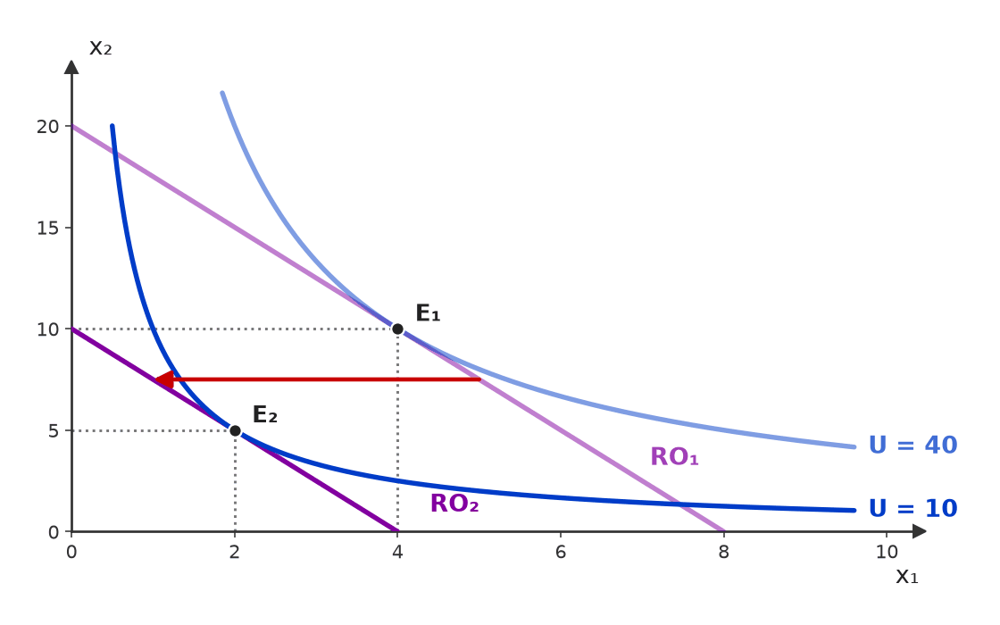 Dobrar os dois preços com a renda fixa (80) equivale a cortar a renda real pela metade: a reta orçamentária se desloca paralelamente para dentro (mesma inclinação p₁/p₂ = 2,5) e o ótimo passa de E₁ = (4; 10) para E₂ = (2; 5). 🧐 Dissecando a redação do item: [meia-verdade · nexo indevido] A premissa geométrica é verdadeira (deslocamento paralelo, preços relativos intactos); o erro é concluir que o ótimo não muda — confunde “mesma inclinação” com “mesma reta”. Quem lembra da homogeneidade de grau zero sem conferir se a renda também dobrou cai. 😈 Para dificultar:
✍️ Reescrita correta: Se ambos os preços forem multiplicados por 2, passando-se a p'₁ = 20 e p'₂ = 8, com a renda mantida em r = 80, o vetor de demanda ótima (x₁*, x₂*) passará de (4, 10) para (2, 5), pois a restrição orçamentária se deslocará paralelamente para dentro, reduzindo-se a renda real à metade. |
[C/E - IDEG – Prof. Bozan › Pré-TPS/2026 › Restrição orçamentária]A análise das restrições orçamentárias e das escolhas do consumidor considera vários elementos centrais na microeconomia, incluindo preferências, renda, preços, e as curvas de indiferença. Com base nessa análise, julgue os itens a seguir. Item: Quando ocorre uma variação na renda de um consumidor, a restrição orçamentária se desloca paralelamente sem alterar sua inclinação. Já uma alteração nos preços modifica necessariamente a inclinação da restrição orçamentária, impactando as possibilidades de consumo. | ❌ ERRADO Quando ocorre uma variação na renda de um consumidor, a restrição orçamentária se desloca paralelamente sem alterar sua inclinação. Já uma alteração nos preços modifica necessariamente a inclinação da restrição orçamentária, impactando as possibilidades de consumo. 🎯 Em poucas palavras: A inclinação é o preço relativo p₁/p₂. Se os dois preços variarem na mesma proporção, ela não muda: a restrição só se desloca paralelamente, como numa variação de renda. 📖 Destrinchando o tema:
🧐 Dissecando a redação do item: [modulador absoluto] A 1ª frase é exata e o erro mora num advérbio: “necessariamente”. Pista: “alteração nos preços” (plural, genérico) inclui a mudança proporcional de todos eles. 😈 Para dificultar:
✍️ Reescrita correta: Quando ocorre uma variação na renda de um consumidor, a restrição orçamentária se desloca paralelamente sem alterar sua inclinação. Já uma alteração nos preços modifica |
[C/E - Clipping › Simuladão Julho/2025 › Restrição orçamentária]As escolhas do consumidor são fundamentais para entender a formação de preços e quantidades em mercados competitivos. Com base na teoria da demanda e nas preferências dos agentes, julgue os itens a seguir. Item: A restrição orçamentária representa todas as combinações de bens que um consumidor pode adquirir, sendo modificada apenas quando há variação da renda nominal. | ❌ ERRADO A restrição orçamentária representa todas as combinações de bens que um consumidor pode adquirir, sendo modificada apenas quando há variação da renda nominal. 🎯 Em poucas palavras: A reta orçamentária p₁x₁ + p₂x₂ = m muda com a renda (deslocamento paralelo) e com os preços (giro, mudança de inclinação). 📖 Destrinchando o tema:
🧐 Dissecando a redação do item: [restrição indevida] O “apenas” elimina os preços como causa de mudança. Pista: a própria definição (combinações que se pode adquirir) depende dos preços. 🔥 “Apenas”/“somente” em itens de teoria quase sempre sinaliza ERRADO. 😈 Para dificultar:
✍️ Reescrita correta: A restrição orçamentária representa todas as combinações de bens que um consumidor pode adquirir, sendo modificada tanto por variações da renda nominal quanto por variações dos preços dos bens. |
❌ [C/E - Prof. Rodrigo Teixeira › Intensivo Pré-TPS/2023 › Restrição orçamentária]Sobre a teoria do consumidor, avalie os itens a seguir. Item: Os aumentos recentes do preço da energia elétrica deslocam a restrição orçamentária dos consumidores para baixo, porém, não alteram a sua inclinação. | ❌ ERRADO Os aumentos recentes do preço da energia elétrica deslocam a restrição orçamentária dos consumidores para baixo, porém, não alteram a sua inclinação. 🎯 Em poucas palavras: Mudar o preço de um bem muda o preço relativo e, portanto, a inclinação (−pE/pO): a reta gira para dentro em torno do intercepto do outro bem. Deslocamento paralelo é efeito de renda ou de alta proporcional de todos os preços. 📖 Destrinchando o tema:
📈 No gráfico: 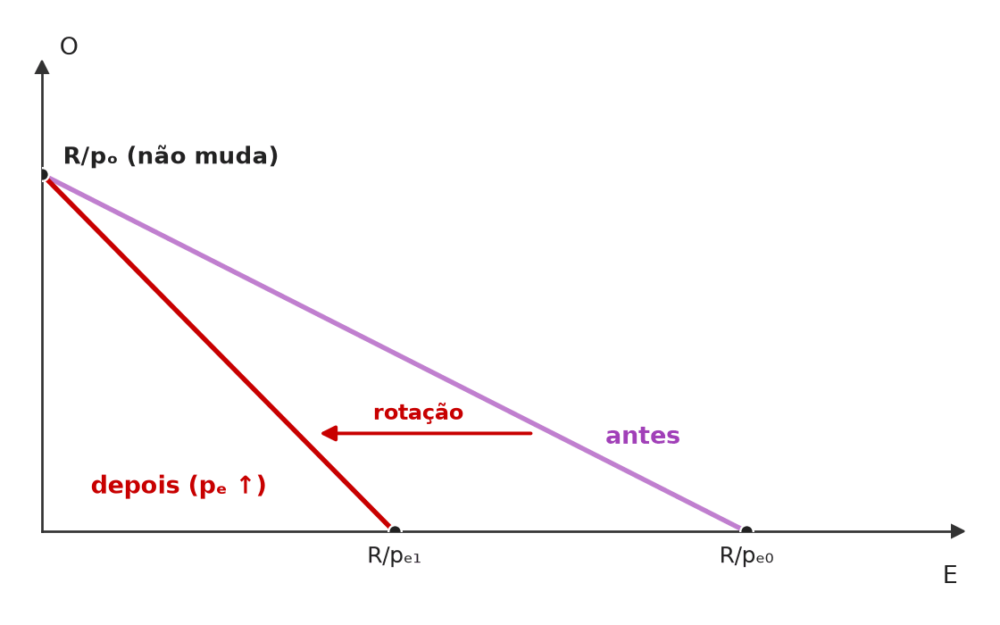 Com renda e preço dos outros bens constantes, a alta do preço da energia mantém o intercepto R/pₒ e encolhe o de energia (R/pₑ): a reta GIRA para dentro e fica mais íngreme — muda a inclinação, não há deslocamento paralelo. 🧐 Dissecando a redação do item: [troca de conceito · meia-verdade] O item atribui ao preço de um bem o efeito típico de uma queda de renda (reta paralela para baixo). O “porém” cria a sensação de ressalva técnica. Pista: preço de um só bem ⇒ preço relativo mudou ⇒ inclinação mudou. 😈 Para dificultar:
✍️ Reescrita correta: Os aumentos recentes do preço da energia elétrica fazem girar a restrição orçamentária dos consumidores para dentro, em torno do intercepto dos outros bens, e alteram a sua inclinação. |
[C/E - CEBRASPE › IRBr/CACD/2026 › Escolha ótima do consumidor]Considere um consumidor com função utilidade U = x₁x₂, em que x₁ e x₂ representam, respectivamente, as quantidades consumidas dos bens 1 e 2. Considere, ainda, que o preço do bem 1 seja p₁ = 10, o preço do bem 2 seja p₂ = 4, o rendimento do consumidor seja r = 80 e que o consumidor seja racional, prefira mais a menos (monotonicidade) e gaste toda a sua renda em x₁ e x₂. Com base nessas informações, e considerando que TMS seja a taxa marginal de substituição, julgue os itens a seguir. Item: O consumo ótimo é dado por (x₁*, x₂*) = (4, 10), obtido no ponto em que a TMS₁₂ é igual à razão entre os preços p₁/p₂, sujeito à restrição orçamentária. | ✅ CERTO O consumo ótimo é dado por (x₁*, x₂*) = (4, 10), obtido no ponto em que a TMS₁₂ é igual à razão entre os preços p₁/p₂, sujeito à restrição orçamentária. 🎯 Em poucas palavras: TMS₁₂ = x₂/x₁ = p₁/p₂ = 2,5 → x₂ = 2,5x₁; na restrição 10x₁ + 4(2,5x₁) = 80 → x₁ = 4, x₂ = 10. 📖 Destrinchando o tema:
📈 No gráfico: 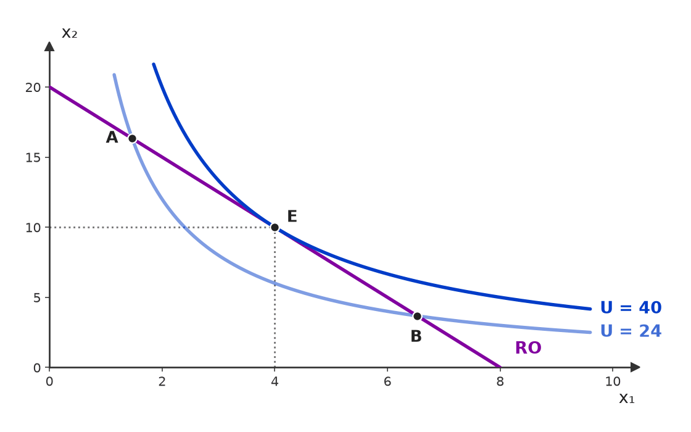 O ótimo E = (4; 10) é o ponto em que a curva de indiferença mais alta alcançável (x₁x₂ = 40) tangencia a reta orçamentária: ali TMS = x₂/x₁ = 2,5 = p₁/p₂. Em A e B a curva U = 24 corta a reta — a TMS difere da razão de preços e ainda dá para melhorar. 🧐 Dissecando a redação do item: [literalidade · detalhe] Item de cálculo com o método descrito corretamente. A banca poderia errar o par ordenado ((10, 4)), a razão (p₂/p₁) ou o método (TMS maior que a razão de preços). Conferir sempre a restrição: o ponto precisa esgotar a renda. 😈 Para dificultar:
|
[C/E - CEBRASPE › IRBr/CACD/2026 › Escolha ótima do consumidor]Considere um consumidor com função utilidade U = x₁x₂, em que x₁ e x₂ representam, respectivamente, as quantidades consumidas dos bens 1 e 2. Considere, ainda, que o preço do bem 1 seja p₁ = 10, o preço do bem 2 seja p₂ = 4, o rendimento do consumidor seja r = 80 e que o consumidor seja racional, prefira mais a menos (monotonicidade) e gaste toda a sua renda em x₁ e x₂. Com base nessas informações, e considerando que TMS seja a taxa marginal de substituição, julgue o item a seguir. Item: No ponto ótimo, o gasto com o bem 1 é maior do que o gasto com o bem 2, pois o bem 1 é mais caro e o consumidor maximiza a utilidade concentrando a renda no bem de maior preço. | ❌ ERRADO No ponto ótimo, o gasto com o bem 1 é maior do que o gasto com o bem 2, pois o bem 1 é mais caro e o consumidor maximiza a utilidade concentrando a renda no bem de maior preço. 🎯 Em poucas palavras: Na Cobb-Douglas U = x₁x₂ (expoentes iguais), o consumidor gasta metade da renda em cada bem, qualquer que seja o preço: R$ 40 em cada (x₁ = 4, x₂ = 10). 📖 Destrinchando o tema:
🧐 Dissecando a redação do item: [nexo indevido · dado alterado] O item inventa uma relação causal (bem caro → mais gasto) que soa intuitiva e a apresenta como resultado da maximização. Quem resolve a conta acha 40 = 40 em segundos; quem confia na intuição cai. 🔥 Cobb-Douglas com expoentes iguais é presença constante no CACD: decore as participações fixas. 😈 Para dificultar:
✍️ Reescrita correta: No ponto ótimo, o gasto com o bem 1 é igual ao gasto com o bem 2 (R$ 40 em cada), pois, na Cobb-Douglas com expoentes iguais, o consumidor destina metade da renda a cada bem, qualquer que seja o preço. |
[C/E - CEBRASPE › TJ/PA/2025 › Escolha ótima do consumidor]Julgue os itens a seguir, a respeito de determinação das curvas de procura, elasticidade, produtividade e custos de produção. Item: A cesta de mercado que maximiza a utilidade do consumidor situa-se sobre a linha de orçamento e é tangente à curva de indiferença mais alta. | ✅ CERTO A cesta de mercado que maximiza a utilidade do consumidor situa-se sobre a linha de orçamento e é tangente à curva de indiferença mais alta. 🎯 Em poucas palavras: O ótimo (interior, preferências bem-comportadas) é o ponto em que a reta orçamentária tangencia a curva de indiferença mais alta alcançável: gasta toda a renda e TMS = px/py. 📖 Destrinchando o tema:
📈 No gráfico: 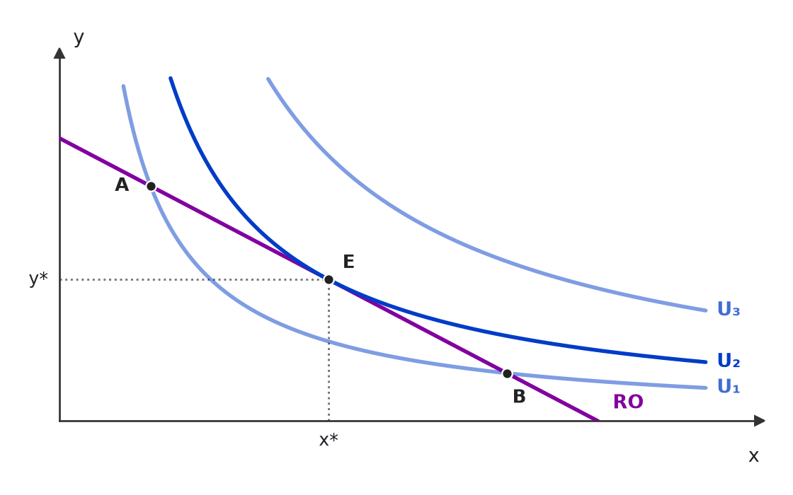 Em A e B a curva U₁ corta a reta orçamentária (RO): há cestas melhores na própria reta. U₃ é inalcançável com a renda dada. O ótimo E está sobre a RO, no ponto em que ela tangencia U₂, a curva mais alta que se consegue atingir (TMS = pₓ/pᵧ). 🧐 Dissecando a redação do item: [literalidade] Reproduz o vocabulário de Pindyck e Rubinfeld (“cesta de mercado”, “linha de orçamento”) e a definição de manual. Quem busca pelo em ovo marca ERRADO pela redação imprecisa ou pensando em soluções de canto, que o item não menciona. 😈 Para dificultar:
|
❌ [C/E - CEBRASPE › ANTT/2023 › Escolha ótima do consumidor]A partir da situação hipotética precedente, julgue o item seguinte. Em um modelo simplificado para representar o comportamento esperado do consumidor padrão, dois bens, X e Y, são consumidos em x unidades e y unidades, respectivamente. Esses bens são adquiridos no mercado competitivo aos preços px e py, respectivamente, e o consumidor tem uma renda R a ser gastada no consumo desses bens. O comportamento padrão é que o consumidor deseja maximizar a função utilidade u(x, y), que representa sua satisfação obtida pelo consumo dos bens X e Y, limitado ao seu orçamento, dado pela relação px·x + py·y ≤ R. Item: Se X e Y forem bens perfeitamente substitutos e as preferências do consumidor forem estritamente monotônicas, o equilíbrio do consumidor, dada a restrição orçamentária, será uma solução de canto. | ❌ ERRADO Se X e Y forem bens perfeitamente substitutos e as preferências do consumidor forem estritamente monotônicas, o equilíbrio do consumidor, dada a restrição orçamentária, será uma solução de canto. 🎯 Em poucas palavras: Solução de canto é o caso típico, não o obrigatório: se TMS = a/b = px/py, a reta orçamentária coincide com uma curva de indiferença e todas as cestas dela — inclusive as interiores — são ótimas. 📖 Destrinchando o tema:
📈 No gráfico: 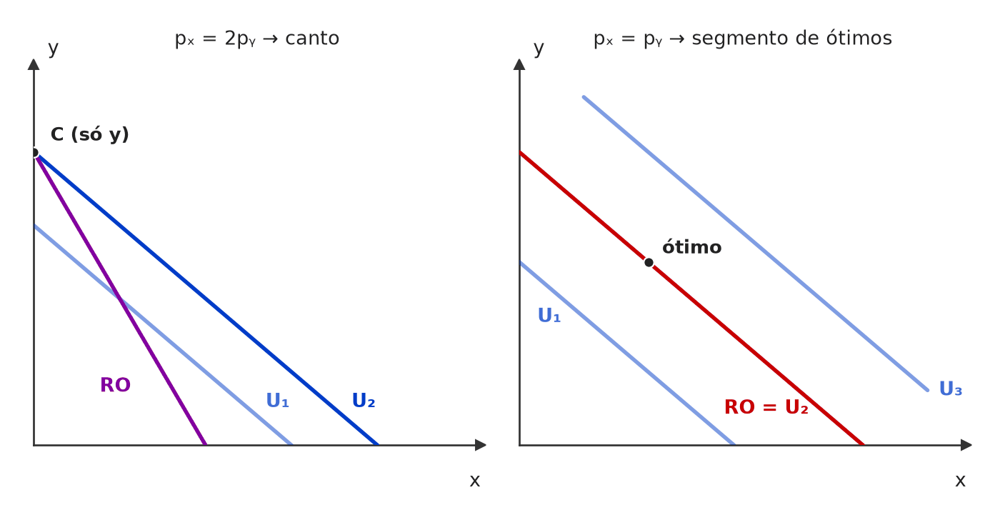 Com u = x + y (curvas de indiferença retas de inclinação −1): à esquerda, pₓ = 2pᵧ e a reta orçamentária é mais íngreme que as curvas; a mais alta, U₂, só é tocada no eixo y (canto C). À direita, pₓ = pᵧ e a reta coincide com U₂: todas as cestas do segmento são ótimas, inclusive as interiores. 🧐 Dissecando a redação do item: [modulador absoluto] O “será” transforma o resultado típico em certeza e apaga o caso de empate de inclinações. 🔥 A banca adora o caso-limite: a solução de canto é possível (e típica) com substitutos perfeitos, não necessária. 😈 Para dificultar:
✍️ Reescrita correta: Se X e Y forem bens perfeitamente substitutos e as preferências do consumidor forem estritamente monotônicas, o equilíbrio do consumidor, dada a restrição orçamentária, poderá ser uma solução de canto, mas, se a TMS igualar a razão de preços, qualquer cesta da reta orçamentária será ótima. |
❌ [C/E - CEBRASPE › IBRAM/Analista/2009 › Escolha ótima do consumidor]Acerca da teoria do consumidor, julgue o item a seguir. Item: Se determinado consumidor aloca mensalmente parte de seu salário entre dois bens, x e y, e se a utilidade marginal do bem x for superior àquela referente ao bem y, então, para elevar seu nível de utilidade, o consumidor deve reduzir o consumo de x e elevar o consumo de y. | ❌ ERRADO Se determinado consumidor aloca mensalmente parte de seu salário entre dois bens, x e y, e se a utilidade marginal do bem x for superior àquela referente ao bem y, então, para elevar seu nível de utilidade, o consumidor deve reduzir o consumo de x e elevar o consumo de y. 🎯 Em poucas palavras: O dinheiro deve ir para onde rende mais utilidade: se x rende mais (por real), realoca-se para x, não para y. O item inverte a direção. 📖 Destrinchando o tema:
🧐 Dissecando a redação do item: [inversão] A premissa é correta e a conclusão aponta o sentido oposto da realocação. A banca aposta em quem lê “utilidade marginal maior” como “bem já saturado”. Nota: o item omite os preços — o ponto fino é que a regra correta compara UMg/p. 😈 Para dificultar:
✍️ Reescrita correta: Se determinado consumidor aloca mensalmente parte de seu salário entre dois bens, x e y, e se a utilidade marginal do bem x for superior àquela referente ao bem y, então, para elevar seu nível de utilidade, o consumidor deve elevar o consumo de x e reduzir o consumo de y (supondo preços iguais; em geral, compara-se a utilidade marginal por real). |
[C/E - Clipping › Simuladão Março/2026 › Escolha ótima do consumidor]Com base na teoria do consumidor, julgue o item a seguir. Item: A condição de equilíbrio do consumidor exige que a taxa marginal de substituição entre dois bens seja inferior ao preço relativo, pois apenas nesse ponto o consumidor terá esgotado todas as possibilidades de ganho de utilidade dentro da restrição orçamentária. | ❌ ERRADO A condição de equilíbrio do consumidor exige que a taxa marginal de substituição entre dois bens seja inferior ao preço relativo, pois apenas nesse ponto o consumidor terá esgotado todas as possibilidades de ganho de utilidade dentro da restrição orçamentária. 🎯 Em poucas palavras: O equilíbrio exige TMS = p₁/p₂. Com TMS inferior ao preço relativo ainda há ganho a explorar (comprar menos x₁ e mais x₂) — o oposto de “esgotado”. 📖 Destrinchando o tema:
🧐 Dissecando a redação do item: [dado alterado · meia-verdade] Mesma construção de ECO-E1-0432-1 (Clipping, 2025): troca “igual” por “inferior” e cola uma justificativa verdadeira para dar credibilidade. Pista: “esgotado todas as possibilidades” só combina com igualdade. 😈 Para dificultar:
✍️ Reescrita correta: A condição de equilíbrio do consumidor exige que a taxa marginal de substituição entre dois bens seja igual ao preço relativo, pois apenas nesse ponto o consumidor terá esgotado todas as possibilidades de ganho de utilidade dentro da restrição orçamentária. |
[C/E - Nidi/Jacqueline Bueno › Escolha ótima do consumidor]Com relação à teoria do comportamento do consumidor, julgue certo ou errado (C ou E) os itens a seguir. Item: Um consumidor com função de utilidade U(X, Y) = X⁴Y¹ gastará $20 de cada renda de $100 na aquisição do bem Y. | ✅ CERTO Um consumidor com função de utilidade U(X, Y) = X⁴Y¹ gastará $20 de cada renda de $100 na aquisição do bem Y. 🎯 Em poucas palavras: Na Cobb-Douglas U = XaYb, a fração da renda gasta em Y é b/(a+b) = 1/5 = 20%, independentemente dos preços: $20 de cada $100. 📖 Destrinchando o tema:
🧐 Dissecando a redação do item: [detalhe] Cálculo direto; a armadilha é inverter os pesos (80% em Y) ou achar que falta informação por não haver preços. Na Cobb-Douglas, o gasto proporcional dispensa preços. 😈 Para dificultar:
|
[C/E - IDEG – Prof. Bozan › Pré-TPS/2026 › Escolha ótima do consumidor]A análise das restrições orçamentárias e das escolhas do consumidor considera vários elementos centrais na microeconomia, incluindo preferências, renda, preços, e as curvas de indiferença. Com base nessa análise, julgue os itens a seguir. Item: A inclinação das curvas de indiferença corresponde à taxa marginal de substituição entre dois bens e deve ser igual à razão entre os preços dos bens na escolha ótima do consumidor. No entanto, essa igualdade de inclinações não é válida para substitutos perfeitos, onde a maximização pode ocorrer sem que as inclinações sejam equivalentes. | ✅ CERTO A inclinação das curvas de indiferença corresponde à taxa marginal de substituição entre dois bens e deve ser igual à razão entre os preços dos bens na escolha ótima do consumidor. No entanto, essa igualdade de inclinações não é válida para substitutos perfeitos, onde a maximização pode ocorrer sem que as inclinações sejam equivalentes. 🎯 Em poucas palavras: A tangência (TMS = p₁/p₂) é a regra do ótimo interior; com substitutos perfeitos, a TMS é constante e, se diferir de p₁/p₂, o ótimo é um canto, sem igualdade. 📖 Destrinchando o tema:
🧐 Dissecando a redação do item: [exceção · modulador relativo] O item ensina a regra e cobra a exceção, protegida pelo “pode”. Se dissesse “nunca são equivalentes”, estaria ERRADO (caso a/b = p₁/p₂). 😈 Para dificultar:
|
[C/E - IDEG – Prof. Bozan › Pré-TPS/2026 › Escolha ótima do consumidor]A análise das restrições orçamentárias e das escolhas do consumidor considera vários elementos centrais na microeconomia, incluindo preferências, renda, preços, e as curvas de indiferença. Com base nessa análise, julgue os itens a seguir. Item: Uma solução de canto indica que o consumidor emprega toda sua renda na aquisição de apenas um dos bens. Isso ocorre frequentemente para complementos perfeitos, onde o consumo de um bem depende intrinsecamente do consumo do outro, forçando a escolha para um ponto extremo da curva de restrição orçamentária. | ❌ ERRADO Uma solução de canto indica que o consumidor emprega toda sua renda na aquisição de apenas um dos bens. Isso ocorre frequentemente para complementos perfeitos, onde o consumo de um bem depende intrinsecamente do consumo do outro, forçando a escolha para um ponto extremo da curva de restrição orçamentária. 🎯 Em poucas palavras: Canto é típico de substitutos perfeitos (e de preferências côncavas). Com complementos perfeitos, o consumidor compra os dois bens na proporção fixa: o ótimo fica no vértice do L, no interior da restrição. 📖 Destrinchando o tema:
🧐 Dissecando a redação do item: [troca de conceito] Troca substitutos por complementos e ainda descreve corretamente a complementaridade (“um bem depende do outro”) — o que, lido com atenção, desmente a própria conclusão. 🔥 A dupla substitutos × complementos perfeitos é das trocas mais frequentes em teoria do consumidor. 😈 Para dificultar:
✍️ Reescrita correta: Uma solução de canto indica que o consumidor emprega toda sua renda na aquisição de apenas um dos bens. Isso ocorre frequentemente para substitutos perfeitos, quando a taxa de troca entre os bens difere da razão de preços, o que leva a escolha para um ponto extremo da curva de restrição orçamentária (com complementos perfeitos, o ótimo fica no vértice do L, com os dois bens). |
[C/E - Armstrong › Pré-TPS/2026 › Escolha ótima do consumidor]Acerca da teoria do consumidor e da escolha ótima, julgue o item a seguir. Item: No problema padrão de utilidade bem-comportada, o ponto ótimo exige (TMgS = Px/Py) e, equivalentemente, (UMg_X/UMg_Y = Px/Py), o que implica (UMg_X/Px = UMg_Y/Py). Essa igualdade vale inclusive em soluções de canto com bens perfeitamente complementares ou substitutos perfeitos, pois a utilidade marginal por real sempre se iguala entre bens. | ❌ ERRADO No problema padrão de utilidade bem-comportada, o ponto ótimo exige (TMgS = Px/Py) e, equivalentemente, (UMg_X/UMg_Y = Px/Py), o que implica (UMg_X/Px = UMg_Y/Py). Essa igualdade vale inclusive em soluções de canto com bens perfeitamente complementares ou substitutos perfeitos, pois a utilidade marginal por real sempre se iguala entre bens. 🎯 Em poucas palavras: A equimarginalidade (UMg/p igual entre bens) é condição de ótimo interior. No canto, o bem comprado rende mais utilidade por real que o outro; no vértice dos complementos, as UMg nem estão definidas. 📖 Destrinchando o tema:
🧐 Dissecando a redação do item: [generalização · meia-verdade] A 1ª frase, técnica e correta, empresta autoridade à 2ª, que estende a regra aos casos que são justamente suas exceções. Os gatilhos: “inclusive” e “sempre”. Bônus de erro: complementos perfeitos citados como fonte de canto. 😈 Para dificultar:
✍️ Reescrita correta: No problema padrão de utilidade bem-comportada, o ponto ótimo exige (TMgS = Px/Py) e, equivalentemente, (UMg_X/UMg_Y = Px/Py), o que implica (UMg_X/Px = UMg_Y/Py). Essa igualdade vale apenas em ótimos interiores com curvas suaves: não vale em soluções de canto (típicas de substitutos perfeitos), em que o bem comprado tem utilidade marginal por real maior ou igual à do outro, nem no vértice dos complementos perfeitos, onde as utilidades marginais não estão definidas. |
[C/E - Clipping › Simuladão Julho/2025 › Escolha ótima do consumidor]As escolhas do consumidor são fundamentais para entender a formação de preços e quantidades em mercados competitivos. Com base na teoria da demanda e nas preferências dos agentes, julgue os itens a seguir. Item: A condição de equilíbrio do consumidor em uma situação de convexidade das preferências ocorre quando a taxa marginal de substituição entre dois bens é inferior ao preço relativo entre esses bens. | ❌ ERRADO A condição de equilíbrio do consumidor em uma situação de convexidade das preferências ocorre quando a taxa marginal de substituição entre dois bens é inferior ao preço relativo entre esses bens. 🎯 Em poucas palavras: Com preferências convexas, o ótimo (interior) é a tangência entre a curva de indiferença mais alta e a reta orçamentária: TMS = p₁/p₂, e não TMS menor. 📖 Destrinchando o tema:
🧐 Dissecando a redação do item: [dado alterado] Troca “igual” por “inferior”. A menção à convexidade é isca de sofisticação: ela reforça que a solução é de tangência, ou seja, de igualdade. Itens irmãos: ECO-E1-0687-1 (mesma construção, outro simulado) e ECO-E1-0191-1 (“superior”). 😈 Para dificultar:
✍️ Reescrita correta: A condição de equilíbrio do consumidor em uma situação de convexidade das preferências ocorre quando a taxa marginal de substituição entre dois bens é igual ao preço relativo entre esses bens. |
❌ [C/E - Nidi/Jacqueline Bueno › Outubro/2024 › Escolha ótima do consumidor]Considerando as teorias básicas do consumidor e do produtor e os conceitos que elas envolvem, julgue certo ou errado (C ou E) o item a seguir. As teorias do consumidor e do produtor são fundamentais para compreender como agentes econômicos tomam decisões racionais em condições de escassez [...] Item: No equilíbrio de longo prazo, tanto para o consumidor quanto para o produtor, a TMS e a TMST se igualam ao preço relativo dos bens e insumos, respectivamente. Essa condição se reflete no fato de que essas taxas devem ser iguais à relação dos preços dos produtos no mercado. | ✅ CERTO No equilíbrio de longo prazo, tanto para o consumidor quanto para o produtor, a TMS e a TMST se igualam ao preço relativo dos bens e insumos, respectivamente. Essa condição se reflete no fato de que essas taxas devem ser iguais à relação dos preços dos produtos no mercado. 🎯 Em poucas palavras: Consumidor: TMS = px/py (tangência curva de indiferença × reta orçamentária). Produtor: TMST = w/r (tangência isoquanta × isocusto). Cada agente iguala sua taxa interna de troca à taxa do mercado. ⚠️ Gabarito contestável: a 2ª frase diz que “essas taxas” igualam a relação dos preços dos produtos, o que só vale para a TMS; a TMST iguala a relação dos preços dos insumos (w/r). E o “longo prazo” é desnecessário para o consumidor (a condição vale a todo momento). O gabarito CERTO se sustenta pelo “respectivamente” da 1ª frase; numa prova CEBRASPE, a redação seria recorrível. 📖 Destrinchando o tema:
🧐 Dissecando a redação do item: [literalidade · detalhe] A 1ª frase é a dupla condição de tangência de manual, amarrada por “respectivamente”. A 2ª frase é frouxa (“preços dos produtos”) e induz a marcar ERRADO; o simulado a tratou como reforço da 1ª. 😈 Para dificultar:
|
[C/E - Nabuco › Pré-TPS/2023 › Escolha ótima do consumidor]No que se refere à teoria do consumidor e às falhas de mercado, julgue (C ou E) os seguintes itens. Item: De acordo a teoria do consumidor, a escolha ótima do consumidor é sempre caracterizada pela igualdade entre a taxa marginal de substituição dos bens e a razão entre os seus respectivos preços. | ❌ ERRADO De acordo a teoria do consumidor, a escolha ótima do consumidor é sempre caracterizada pela igualdade entre a taxa marginal de substituição dos bens e a razão entre os seus respectivos preços. 🎯 Em poucas palavras: A tangência (TMS = p₁/p₂) vale para ótimos interiores de preferências bem comportadas. Falha nas soluções de canto (substitutos perfeitos, preferências côncavas) e no vértice dos complementares perfeitos. 📖 Destrinchando o tema:
📈 No gráfico: 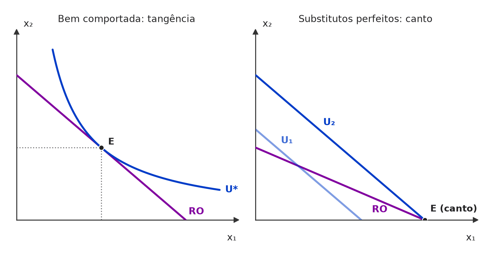 Preferência bem comportada: o ótimo E é a tangência, com TMS = p₁/p₂. Substitutos perfeitos (|TMS| = 1) com p₁/p₂ = 1/2: a curva mais alta alcançável toca a restrição só no eixo — solução de canto, sem igualdade. 🧐 Dissecando a redação do item: [modulador absoluto] A condição é a de manual; o erro é o “sempre”, que apaga as exceções. 🔥 Itens sobre a escolha ótima com “sempre” ou “necessariamente” quase sempre esperam a lembrança da solução de canto. 😈 Para dificultar:
✍️ Reescrita correta: De acordo a teoria do consumidor, a escolha ótima do consumidor é |
❌ [C/E - Prof. Rodrigo Teixeira › Intensivo Pré-TPS/2023 › Escolha ótima do consumidor]Sobre a teoria do consumidor, avalie os itens a seguir. Item: A maximização da utilidade do consumidor requer que o benefício marginal decorrente do consumo de um determinado bem seja igual ao seu preço. | ❌ ERRADO A maximização da utilidade do consumidor requer que o benefício marginal decorrente do consumo de um determinado bem seja igual ao seu preço. 🎯 Em poucas palavras: Na teoria da utilidade, a condição de ótimo é UMgx/px = UMgy/py (igual utilidade por real em todos os bens), e não “UMg = preço” — utilidade e reais não têm a mesma unidade. ⚠️ Gabarito contestável: se “benefício marginal” for lido em reais (disposição a pagar pela última unidade), a regra “compra-se até BMg = p” é a formulação de manual introdutório (Mankiw, “pessoas racionais pensam na margem”) e o item seria CERTO. O gabarito do professor (ERRADO) supõe benefício medido em utilidade; numa prova CEBRASPE, a redação desse item seria recorrível. 📖 Destrinchando o tema:
🧐 Dissecando a redação do item: [troca de conceito] O item troca a condição relativa (UMg por real igual entre bens) por uma igualdade absoluta entre utilidade e preço. 🔥 Em itens de teoria do consumidor, desconfie de qualquer condição de ótimo que olhe um bem isolado: o ótimo é sempre comparação entre bens (ou com λ). 😈 Para dificultar:
✍️ Reescrita correta: A maximização da utilidade do consumidor requer que a utilidade marginal por unidade monetária gasta em um determinado bem seja igual à dos demais bens. |
[C/E - Prof. Rodrigo Teixeira › Intensivo Pré-TPS/2023 › Escolha ótima do consumidor]A respeito da teoria do consumidor, julgue os itens a seguir. Item: Se um consumidor que consome 2 bens normais está em equilíbrio, e estes bens são complementares perfeitos, pode-se dizer que um aumento do preço de um dos bens levará o consumidor a reduzir o consumo deste bem e elevar a quantidade consumida do outro bem. | ❌ ERRADO Se um consumidor que consome 2 bens normais está em equilíbrio, e estes bens são complementares perfeitos, pode-se dizer que um aumento do preço de um dos bens levará o consumidor a reduzir o consumo deste bem e elevar a quantidade consumida do outro bem. 🎯 Em poucas palavras: Complementares perfeitos são consumidos em proporção fixa: a alta do preço de um encarece o “par” e o consumidor reduz os dois na mesma proporção. Aumentar o outro bem seria comportamento de substitutos. 📖 Destrinchando o tema:
📈 No gráfico: 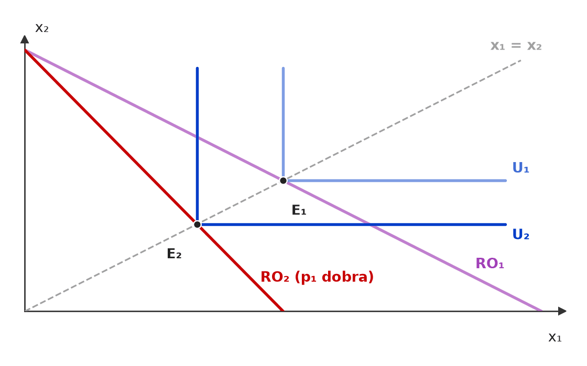 Com x₁ e x₂ complementares perfeitos (1:1), o ótimo está sempre no vértice do L, sobre o raio x₁ = x₂. Quando p₁ dobra, a reta orçamentária gira para dentro e o ótimo desce pelo raio de E₁ (5; 5) para E₂ (3,3; 3,3): os DOIS bens caem na mesma proporção. 🧐 Dissecando a redação do item: [troca de conceito · meia-verdade] A 1ª consequência (reduzir o bem que encareceu) está certa; o erro é o enxerto “e elevar a quantidade consumida do outro”, que descreve substitutos. O “2 bens normais” é distração — na verdade reforça que o efeito renda reduz os dois. 😈 Para dificultar:
✍️ Reescrita correta: Se um consumidor que consome 2 bens normais está em equilíbrio, e estes bens são complementares perfeitos, pode-se dizer que um aumento do preço de um dos bens levará o consumidor a reduzir o consumo deste bem e reduzir, na mesma proporção, a quantidade consumida do outro bem. |
[C/E - Prof. Rodrigo Teixeira › Intensivo Pré-TPS/2023 › Escolha ótima do consumidor]A respeito da teoria do consumidor, julgue os itens a seguir. Item: Suponha um consumidor que consome 2 bens que são substitutos perfeitos. O bem 1 tem uma utilidade marginal de 1, e o bem 2 tem uma utilidade marginal de 2. Se o preço do bem 2 for maior que o dobro do preço do bem 1, o consumidor gastará toda sua renda no bem 1. | ✅ CERTO Suponha um consumidor que consome 2 bens que são substitutos perfeitos. O bem 1 tem uma utilidade marginal de 1, e o bem 2 tem uma utilidade marginal de 2. Se o preço do bem 2 for maior que o dobro do preço do bem 1, o consumidor gastará toda sua renda no bem 1. 🎯 Em poucas palavras: Com substitutos perfeitos vence o bem de maior UMg por real: 1/p₁ > 2/p₂ ⇔ p₂ > 2p₁ — exatamente a condição do item. Solução de canto no bem 1. 📖 Destrinchando o tema:
🧐 Dissecando a redação do item: [detalhe] Item de conta: a banca aposta que o candidato compare só preços (bem 1 é mais barato, ok) ou só utilidades (bem 2 “vale o dobro”, logo seria escolhido). A pista é o “dobro”, que espelha a razão das UMg. 😈 Para dificultar:
|
[C/E - Prof. Rodrigo Teixeira › Intensivo Pré-TPS/2023 › Escolha ótima do consumidor]A respeito da teoria do consumidor, julgue as afirmações a seguir. Item: Se a utilidade marginal do bem A é de 2 e a do bem B é de 1, e os preços destes bens são respectivamente $1 e $2, o consumidor deverá aumentar o consumo de A e diminuir o de B. | ✅ CERTO Se a utilidade marginal do bem A é de 2 e a do bem B é de 1, e os preços destes bens são respectivamente $1 e $2, o consumidor deverá aumentar o consumo de A e diminuir o de B. 🎯 Em poucas palavras: UMgA/pA = 2 útil por real; UMgB/pB = 0,5. O último real em A rende quatro vezes mais: realocar de B para A aumenta a utilidade. 📖 Destrinchando o tema:
🧐 Dissecando a redação do item: [detalhe] Item numérico simples, mas com a armadilha clássica: quem compara só as utilidades marginais (2 > 1) ou só os preços chega à resposta certa por acaso e erra a variante seguinte. O que decide é a razão UMg/p. 😈 Para dificultar:
|
[C/E - Prof. Rodrigo Teixeira › Intensivo Pré-TPS/2023 › Escolha ótima do consumidor]Acerca dos conceitos e teorias da microeconomia, julgue os itens a seguir. Item: Se a mudança no preço relativo de 2 bens leva a uma situação em que a utilidade marginal do bem A dividida por seu preço é menor que a utilidade marginal do bem B dividida pelo preço de B, o consumidor reduzirá a quantidade do bem A e aumentará a do bem B. | ✅ CERTO Se a mudança no preço relativo de 2 bens leva a uma situação em que a utilidade marginal do bem A dividida por seu preço é menor que a utilidade marginal do bem B dividida pelo preço de B, o consumidor reduzirá a quantidade do bem A e aumentará a do bem B. 🎯 Em poucas palavras: Se UMgA/pA < UMgB/pB, o último real rende mais em B: o consumidor tira gasto de A e põe em B até as razões se igualarem. 📖 Destrinchando o tema:
🧐 Dissecando a redação do item: [paráfrase fiel] O item reescreve a regra de equimarginalidade com a desigualdade no sentido “menor” para testar se o candidato inverte a direção da realocação. Pista: segue o real para onde ele rende mais. 😈 Para dificultar:
|
❌ [C/E - Prof. Rodrigo Teixeira › Intensivo Pré-TPS/2023 › Escolha ótima do consumidor]A respeito da teoria do consumidor, julgue os itens a seguir. Item: O equilíbrio do consumidor, no caso de dois bens substitutos perfeitos, implica que o consumidor compre sempre aquele com preço mais baixo. | ❌ ERRADO O equilíbrio do consumidor, no caso de dois bens substitutos perfeitos, implica que o consumidor compre sempre aquele com preço mais baixo. 🎯 Em poucas palavras: Com substitutos perfeitos o critério é a maior UMg por real (TMS × razão de preços), não o menor preço; e, se UMg/p empatar, qualquer cesta da reta orçamentária é ótima. 📖 Destrinchando o tema:
🧐 Dissecando a redação do item: [modulador absoluto · meia-verdade] “Sempre” + “preço mais baixo” é uma simplificação que funciona no exemplo de manual (marcas idênticas, 1:1) e falha fora dele: no empate de preços e quando as unidades não se trocam 1 por 1. 😈 Para dificultar:
✍️ Reescrita correta: O equilíbrio do consumidor, no caso de dois bens substitutos perfeitos, implica que o consumidor compre apenas aquele com maior utilidade marginal por unidade monetária, sendo indiferente entre as cestas da reta orçamentária se essas razões forem iguais. |
[C/E - Prof. Rodrigo Teixeira › Intensivo Pré-TPS/2023 › Escolha ótima do consumidor]A respeito da teoria do consumidor, julgue os itens a seguir. Item: Quando dois bens são complementares perfeitos, o consumidor comprará ambos sempre na mesma proporção, não importando a inclinação da restrição orçamentária. | ✅ CERTO Quando dois bens são complementares perfeitos, o consumidor comprará ambos sempre na mesma proporção, não importando a inclinação da restrição orçamentária. 🎯 Em poucas palavras: Nas preferências de Leontief o ótimo é sempre o vértice do L, sobre o raio de proporção fixa. Preços relativos mudam a quantidade de “pares”, nunca a proporção. 📖 Destrinchando o tema:
🧐 Dissecando a redação do item: [contraintuitivo · literalidade] Os moduladores absolutos (“sempre”, “não importando”) levam a marcar ERRADO por reflexo; aqui eles são exatamente a propriedade definidora dos complementares perfeitos. 😈 Para dificultar:
|
[C/E - Banca não identificada › 2018 › Escolha ótima do consumidor]Julgue o item a seguir, relativo à escolha ótima do consumidor. Item: Caso as preferências do indivíduo sejam representadas por uma função de utilidade linear, é possível que ele escolha não consumir um dos bens. | ✅ CERTO Caso as preferências do indivíduo sejam representadas por uma função de utilidade linear, é possível que ele escolha não consumir um dos bens. 🎯 Em poucas palavras: Utilidade linear = substitutos perfeitos: a TMS é constante e, salvo coincidência com a razão de preços, o ótimo é uma solução de canto — gasta-se tudo num só bem. 📖 Destrinchando o tema:
📈 No gráfico: 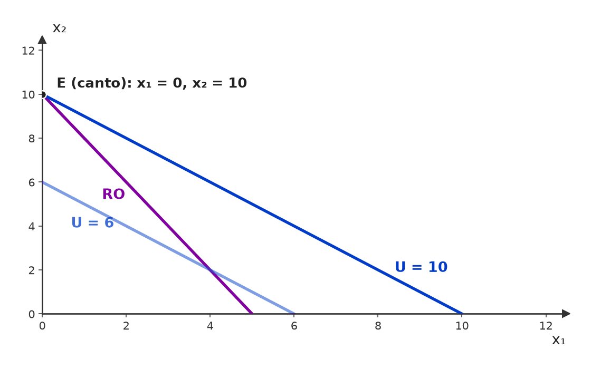 Utilidade linear U = x₁ + x₂ (curvas de indiferença retas, TMS = 1) e reta orçamentária mais inclinada (p₁/p₂ = 2): a curva de indiferença mais alta que a renda alcança toca a reta só no eixo — o consumidor gasta tudo em x₂ e não consome x₁ (solução de canto). 🧐 Dissecando a redação do item: [modulador relativo] O “é possível” salva o item: o canto não é obrigatório (se a/b = p₁/p₂ há infinitas soluções, inclusive interiores), mas pode ocorrer. A banca inverteria com “necessariamente consumirá ambos os bens”. 😈 Para dificultar:
|
[C/E - Banca não identificada › Escolha ótima do consumidor]Acerca da escolha do consumidor em mercados competitivos, julgue o item a seguir. Item: Nos mercados competitivos, a escolha ótima a ser feita por determinado consumidor corresponde à escolha em que a taxa marginal de substituição entre dois bens quaisquer é igual para todos os consumidores. | ✅ CERTO Nos mercados competitivos, a escolha ótima a ser feita por determinado consumidor corresponde à escolha em que a taxa marginal de substituição entre dois bens quaisquer é igual para todos os consumidores. 🎯 Em poucas palavras: Cada consumidor escolhe onde TMS = px/py. Em mercado competitivo, todos enfrentam os mesmos preços, logo, no ótimo, todas as TMS são iguais. 📖 Destrinchando o tema:
🧐 Dissecando a redação do item: [detalhe · contraintuitivo] A redação junta duas coisas — o ótimo individual (TMS = preço relativo) e a consequência agregada (TMS igual para todos) — numa só frase, o que soa estranho. O elo é o preço único do mercado competitivo; quem pensa que preferências diferentes geram TMS diferentes no ótimo marca ERRADO. 😈 Para dificultar:
|
[C/E - Banca não identificada › Escolha ótima do consumidor]Julgue o item a seguir, relativo à escolha ótima do consumidor. Item: Um ponto de escolha ótima é aquele onde a taxa marginal de substituição entre dois bens é estritamente superior aos seus preços relativos. | ❌ ERRADO Um ponto de escolha ótima é aquele onde a taxa marginal de substituição entre dois bens é estritamente superior aos seus preços relativos. 🎯 Em poucas palavras: No ótimo interior com preferências convexas, a TMS é igual à razão de preços (TMS = p₁/p₂): a curva de indiferença tangencia a reta orçamentária. 📖 Destrinchando o tema:
🧐 Dissecando a redação do item: [dado alterado · troca de conceito] O item troca o sinal da condição (igual → “estritamente superior”). O advérbio “estritamente” é o gatilho: exclui a igualdade, que é justamente a resposta. Itens irmãos: ECO-E1-0432-1 e ECO-E1-0687-1 (“inferior”). 😈 Para dificultar:
✍️ Reescrita correta: Um ponto de escolha ótima é aquele onde a taxa marginal de substituição entre dois bens é igual aos seus preços relativos. |
[C/E - Nidi/Jacqueline Bueno › Demanda individual e de mercado]Os agentes microeconômicos fazem suas escolhas de forma racional em um cenário de informações completas e simetricamente distribuídas. A respeito da Teoria do Consumidor, julgue certo ou errado (C ou E) os itens a seguir. Item: Bens que apresentam nível de quantidade a partir do qual a satisfação adicional é negativa apresentam uma curva de demanda crescente a partir dessa quantidade. | ❌ ERRADO Bens que apresentam nível de quantidade a partir do qual a satisfação adicional é negativa apresentam uma curva de demanda crescente a partir dessa quantidade. 🎯 Em poucas palavras: Além do ponto de saciedade (UMg < 0), o consumidor simplesmente não compra mais — nem de graça. Isso limita a quantidade demandada, mas não torna a demanda crescente. 📖 Destrinchando o tema:
🧐 Dissecando a redação do item: [nexo indevido] A premissa (UMg negativa após certo ponto) é verdadeira e possível; o erro está na consequência inventada, que mistura saciedade com o caso Giffen. Pista: “a partir dessa quantidade” — além dela o consumidor não compra, então não há curva de demanda ali para ser crescente. 😈 Para dificultar:
✍️ Reescrita correta: Bens que apresentam nível de quantidade a partir do qual a satisfação adicional é negativa não são consumidos além dessa quantidade, o que limita a demanda sem torná-la crescente. |
[C/E - Simulado Sapientia › Set/2024 › Demanda individual e de mercado]Acerca da demanda do consumidor, julgue o item a seguir. [Enunciado reconstruído: na fonte, a frente era só uma imagem, não preservada.] Item: Ao longo da curva de demanda individual há diferentes níveis de utilidade associados, mantidos constantes a renda e os preços dos demais bens. | ✅ CERTO Ao longo da curva de demanda individual há diferentes níveis de utilidade associados, mantidos constantes a renda e os preços dos demais bens. 🎯 Em poucas palavras: Na demanda marshalliana (renda fixa), cada preço gera uma cesta ótima numa curva de indiferença diferente: preço mais alto → utilidade menor. A utilidade só é constante ao longo da hicksiana. 📖 Destrinchando o tema:
🧐 Dissecando a redação do item: [detalhe] O item testa se o candidato confunde as duas demandas. A versão ERRADA diria “mesmo nível de utilidade ao longo da curva de demanda ordinária”. 😈 Para dificultar:
|
[C/E - Nidi/Jacqueline Bueno › Simulado Novembro/2024 › Demanda individual e de mercado]Considerando essa informação e a teoria econômica subjacente, julgue certo ou errado (C ou E) o item a seguir. No estudo das preferências dos consumidores, é comum assumir que ‘quanto mais de um bem, melhor’. Esse pressuposto facilita a construção de modelos teóricos na economia, como a análise da teoria do consumidor e a formulação de curvas de demanda. Contudo, esse princípio nem sempre se aplica: há bens cujo consumo excessivo pode levar a uma redução na satisfação, ou até mesmo a uma insatisfação com a aquisição de unidades adicionais. Item: Bens que apresentam nível de quantidade a partir do qual a satisfação adicional é negativa têm curva de demanda crescente a partir dessa quantidade. | ❌ ERRADO Bens que apresentam nível de quantidade a partir do qual a satisfação adicional é negativa têm curva de demanda crescente a partir dessa quantidade. 🎯 Em poucas palavras: Além do ponto de saciedade, ninguém paga por mais unidades: a demanda se esgota ali (quantidade máxima, demandada a preço zero). Demanda crescente é outro fenômeno (Giffen, Veblen). 📖 Destrinchando o tema:
🧐 Dissecando a redação do item: [nexo indevido] Liga dois fatos de domínios diferentes — utilidade marginal negativa e inclinação da demanda — como causa e efeito. O texto motivador fala de “redução na satisfação”, convidando a imaginar um comportamento “anormal” da demanda. 😈 Para dificultar:
✍️ Reescrita correta: Bens que apresentam nível de quantidade a partir do qual a satisfação adicional é negativa deixam de ser demandados a partir dessa quantidade, pois o consumidor não paga por unidades que reduzem sua utilidade. |
[C/E - Banca não identificada › Demanda individual e de mercado]Acerca da demanda de mercado, julgue o item a seguir. Item: A curva de demanda de mercado de um determinado bem representa a soma das demandas individuais. | ✅ CERTO A curva de demanda de mercado de um determinado bem representa a soma das demandas individuais. 🎯 Em poucas palavras: A demanda de mercado é a soma horizontal das demandas individuais: para cada preço, somam-se as quantidades demandadas por todos os consumidores. 📖 Destrinchando o tema:
🧐 Dissecando a redação do item: [literalidade] Item curto e verdadeiro. A versão que a banca usa para derrubar é trocar “soma horizontal” por “vertical” ou aplicar a soma horizontal a bens públicos. 😈 Para dificultar:
|
[C/E - Banca não identificada › Demanda individual e de mercado]Julgue o item a seguir, relativo às funções de demanda do consumidor. Item: Na função Walrasiana ou Marshaliana a quantidade demandada é função do preço de um bem e da renda. | ✅ CERTO Na função Walrasiana ou Marshaliana a quantidade demandada é função do preço de um bem e da renda. 🎯 Em poucas palavras: A demanda marshalliana (ou walrasiana), x(p, m), resulta de maximizar a utilidade dada a renda: depende dos preços e da renda — e não do nível de utilidade, como a hicksiana. 📖 Destrinchando o tema:
🧐 Dissecando a redação do item: [literalidade · detalhe] Formulação simplificada (“do preço de um bem e da renda”): a forma completa inclui os demais preços, mas incompleto não é errado. A pegadinha clássica é trocar renda por utilidade, o que descreveria a hicksiana. 😈 Para dificultar:
|